机器学习（machine learning, ML） 旨在使模型从观测数据中学习潜在的规律，并利用所学习的规律完成预测或结构发现等任务。设一项研究共观测到\(n\) 个样本，每个样本由\(p\) 个特征（feature） 描述。记第\(i\) 个样本的特征向量为：
\[\begin{equation*}
x_i=(x_{i1},x_{i2},\ldots,x_{ip})^\top\in X
\end{equation*}\]
其中\(x_{ij}\) 表示第\(i\) 个样本在第\(j\) 个特征上的取值，称\(X\) 为特征空间。
根据观测数据是否包含需要预测的目标信息，机器学习方法可以大致分为监督学习（supervised learning） 和无监督学习（unsupervised learning） 。
在监督学习中，每个特征向量\(x_i\) 都对应一个输出结果\(y_i\in Y\) ，其中\(y_i\) 称为第\(i\) 个样本的响应变量，\(Y\) 称为输出空间。监督学习的观测数据集记为：
\[\begin{equation*}
\mathcal{D}=\{(x_i,y_i)\}_{i=1}^n
\end{equation*}\]
将所有样本的输入向量按行排列，可以得到特征矩阵：
\[\begin{equation*}
X=
\begin{pmatrix}
x_1^\top \\
x_2^\top \\
\vdots \\
x_n^\top
\end{pmatrix}
=
\begin{pmatrix}
x_{11}&x_{12}&\cdots&x_{1p} \\
x_{21}&x_{22}&\cdots&x_{2p} \\
\vdots&\vdots&\ddots&\vdots \\
x_{n1}&x_{n2}&\cdots&x_{np}
\end{pmatrix}
\end{equation*}\]
相应的输出向量记为：
\[\begin{equation*}
y=(y_1,y_2,\dots,y_n)^\top
\end{equation*}\]
监督学习的目标是利用观测数据集\(\mathcal{D}\) 学习一个从特征空间\(X\) 到输出空间\(Y\) 的预测函数：
\[\begin{equation*}
f:X\longrightarrow Y
\end{equation*}\]
使得对于观测数据中未出现的新输入\(x\in X\) ，模型能够给出相应的预测\(f(x)\) 。
例如，考虑利用血常规检查结果辅助判断受检者是否患有某种疾病。对于每位既往患者，我们既记录其白细胞计数、中性粒细胞比例、血红蛋白浓度和血小板计数等血常规指标，又记录医生结合临床表现、血常规结果及其他检查所确定的诊断结果。于是，每位患者的血常规指标构成一个特征向量\(x_i\) ，其临床诊断结果构成相应的输出变量\(y_i\) 。收集一批既往患者的数据后，可以得到监督学习的观测数据集\(\mathcal{D}=\{(x_i,y_i)\}_{i=1}^n\) 。模型利用这些已知诊断结果的历史数据，学习血常规指标与患病状态之间的潜在关系。当获得一位新受检者的血常规数据时，便可以将其作为新的输入，由模型预测该受检者是否可能患病，从而为医生的临床判断提供辅助信息。表17.1 给出了一个简化的观测数据集示例。
表 17.1 基于血常规指标判断是否患病的监督学习数据示例
样本
白细胞计数
中性粒细胞比例
血红蛋白
血小板计数
是否患病
\(1\)
\(6.2\)
\(58\)
\(145\)
\(245\)
否
\(2\)
\(12.8\)
\(82\)
\(132\)
\(310\)
是
\(3\)
\(5.7\)
\(54\)
\(151\)
\(228\)
否
\(4\)
\(14.1\)
\(86\)
\(126\)
\(335\)
是
\(5\)
\(7.0\)
\(61\)
\(139\)
\(260\)
否
\(6\)
\(11.6\)
\(79\)
\(128\)
\(298\)
是
在无监督学习中，观测数据不包含预先给定的输出变量，因而观测数据集记为：
\[\begin{equation*}
\mathcal{D}=\{x_i\}_{i=1}^n
\end{equation*}\]
无监督学习的目标不是预测某个已知的输出，而是从输入数据中发现潜在的结构或模式。例如，可以根据样本之间的相似性将其划分为若干组，或者使用较少的变量概括原始数据中的主要信息。
在监督学习中，根据输出空间\(Y\) 的类型，可以进一步将问题分为分类问题和回归问题。
当响应变量只取有限个离散类别时，该问题称为分类问题 。设所有可能的类别为\(Y=\{1,2,\dots,K\}\) ，其中\(K\) 为类别数。分类模型需要根据特征判断一个样本所属的类别。例如，根据邮件内容判断其是否为垃圾邮件，或者根据医学检查结果判断患者是否患病。此时我们又称第\(i\) 个样本的响应变量\(y_i\) 为其标签（label） 。
当响应变量为连续数值时，该问题称为回归问题 ，通常有\(Y\subseteq\mathbb{R}\) 。回归模型需要学习特征与数值型输出之间的关系。例如，根据房屋面积和位置预测房价，或者根据患者的临床指标预测某项连续的生理数值。
分类问题在形式上也可以转化为回归问题：模型首先根据样本特征输出一个连续的分类得分，再根据预先设定的阈值确定样本所属的类别。例如，可以将分类得分大于\(0\) 的样本判为一类，将分类得分小于或等于\(0\) 的样本判为另一类。
模型评价
在监督学习中，模型评价是衡量模型预测能力、比较不同模型并指导模型选择的重要环节。
分类任务
分类问题可以根据类别数划分为二分类问题与多分类问题，二分类问题即\(K=2\) 的分类问题，多分类问题对应\(K\geqslant3\) 的分类问题。
二分类
在二分类问题中，通常将研究中重点关注、希望模型识别出的类别称为正类 ，将另一个类别称为负类 。
表 17.2 二分类问题的混淆矩阵
真实类别\(\backslash\) 预测类别
正类(\(\hat{y}=1\) )
负类(\(\hat{y}=0\) )
正类(\(y=1\) )
TP
FN
负类(\(y=0\) )
FP
TN
Definition 17.2 . 准确率（accuracy） 度量模型预测正确的比例：
\[\begin{equation*}
\operatorname{Accuracy}=\frac{\operatorname{TP}+\operatorname{TN}}{\operatorname{TP}+\operatorname{TN}+\operatorname{FP}+\operatorname{FN}}
\end{equation*}\]
Accuracy 将正类和负类的正确预测汇总为一个整体比例，因而默认两类样本具有相同的重要性，并且不同类型的分类错误具有相同的代价。然而在许多实际问题中，假正类和假负类造成的损失并不相同，我们也可能更关注模型在某一特定类别上的预测表现。
例如，在贷款违约预测中，若将违约客户定义为正类，则将实际违约的客户预测为不违约会使银行承担贷款损失，而将实际不违约的客户预测为违约主要意味着失去一次潜在的放贷机会。这两类错误的经济代价并不相同。因此，即使两个模型具有相同的 Accuracy，它们识别违约客户的能力也可能存在显著差异。为了考察模型针对特定类别的表现，需要进一步引入别的指标。
Definition 17.3 . 精确率（precision） 度量被预测为正类的样本中有多少是真正的正类：
\[\begin{equation*}
\operatorname{Precision}=\frac{\operatorname{TP}}{\operatorname{TP}+\operatorname{FP}}
\end{equation*}\]
note 17.1 . 精确率关心正类预测结果的准确性，在系统对错误正类具有高成本的任务（如垃圾邮件过滤）中尤为重要。较高的精确率意味着模型产生的误报较少。
Definition 17.4 . 召回率（recall） 又称灵敏度（sensitivity） ，衡量真实正类中有多少被模型成功识别，定义为：
\[\begin{equation*}
\operatorname{Recall}=\frac{\operatorname{TP}}{\operatorname{TP}+\operatorname{FN}}
\end{equation*}\]
note 17.2 . 召回率关注对正类的漏判率，适用于需要尽可能检出正类的场景（如疾病筛查或欺诈检测）。高召回率意味着漏报较少，但可能伴随较多假阳性，需要结合精确率来进行分析。
Definition 17.5 . f1分数（f1 score） 是精确率与召回率的调和平均，用于在二者之间取得平衡：
\[\begin{equation*}
\operatorname{F1}=2\times\frac{\operatorname{Precision}\times\operatorname{Recall}}{\operatorname{Precision}+\operatorname{Recall}}
\end{equation*}\]
note 17.3 . 调和平均的性质使\(\operatorname{F1}\) 得分对低值敏感——当精确率或召回率其中之一很低时，\(\operatorname{F1}\) 会显著下降，因此它常用作综合评价指标，适用于精确率和召回率同等重要的情形。
许多分类器并不直接输出类别，而是为每个样本输出一个连续得分或属于正类的概率，并在给定阈值后将其转化为分类结果。然而，分类阈值并不存在适用于所有任务的固定选择，即使模型输出的是概率，也不能机械地将\(0.5\) 作为阈值。阈值的选择取决于正类的基础发生率、假正类与假负类的相对代价以及模型所服务的具体决策目标。
以罕见病筛查为例，假设某种疾病在人群中的患病率仅为\(0.1\%\) 。若模型预测某位受检者的患病概率为\(10\%\) ，那么其患病风险已经达到普通人群的\(100\) 倍，显然应当被识别为高风险个体并接受进一步检查。然而，\(10\%\) 仍然低于\(50\%\) ；若机械地将\(0.5\) 作为分类阈值，该受检者就会被判定为阴性。类似地，在身份认证或银行人脸识别中，系统可能更重视防止冒用身份，因此会采用更加严格的判定阈值，以降低错误接受非本人的概率。
由此可见，同一个模型在不同应用场景中可能需要采用完全不同的阈值，而模型在某一个固定阈值下的表现不能完整反映其分类能力。为了减少评价结果对特定阈值选择的依赖，可以考察阈值连续变化时模型性能的变化，并将其表示为性能曲线。我们希望一个模型在较广的阈值范围内均能保持较好的正负类区分能力，因此可以进一步使用曲线下面积评价模型的综合表现。
Definition 17.6 . 称：
\[\begin{equation*}
\operatorname{TPR}=\frac{\operatorname{TP}}{\operatorname{TP}+\operatorname{FN}},\quad
\operatorname{FPR}=\frac{\operatorname{FP}}{\operatorname{FP}+\operatorname{TN}}
\end{equation*}\]
分别为真阳率（true positive rate, TPR） 与假阳率（false positive rate, FPR） 。
Definition 17.7 . 设分类器将得分不低于阈值\(t\) 的样本预测为正类。受试者工作特征曲线（receiver operating characteristic curve, ROC） 为在阈值取值范围内连续变化\(t\) ，对每个\(t\) 计算对应的：
\[\begin{equation*}
\operatorname{TPR}(t)=\frac{\operatorname{TP}(t)}{\operatorname{TP}(t)+\operatorname{FN}(t)},\quad
\operatorname{FPR}(t)= \frac{\operatorname{FP}(t)}{\operatorname{FP}(t)+\operatorname{TN}(t)}
\end{equation*}\]
然后以\(\mathrm{FPR}\) 为横轴、\(\mathrm{TPR}\) 为纵轴作图得到的曲线。受试者工作特征曲线下面积（area under ROC, AUROC） 定义为ROC曲线与\(\mathrm{FPR}\) 轴和\(\mathrm{FPR}=1\) 围成区域的面积。
note 17.4 . ROC曲线反映了阈值变化对\(\operatorname{TPR}\) 与\(\operatorname{FPR}\) 的权衡。\(\operatorname{AUROC}\) 独立于具体阈值，是比较不同模型总体区分能力的常用指标，取值范围通常在\([0.5,1]\) ，\(0.5\) 表示随机猜测（对任意的\(t\in[0,1]\) 有\(\operatorname{FPR}(t)=\operatorname{TPR}(t)\) ，模型判断正类为正类的概率和模型判断负类为正类的概率一致），\(1\) 表示完美分类。
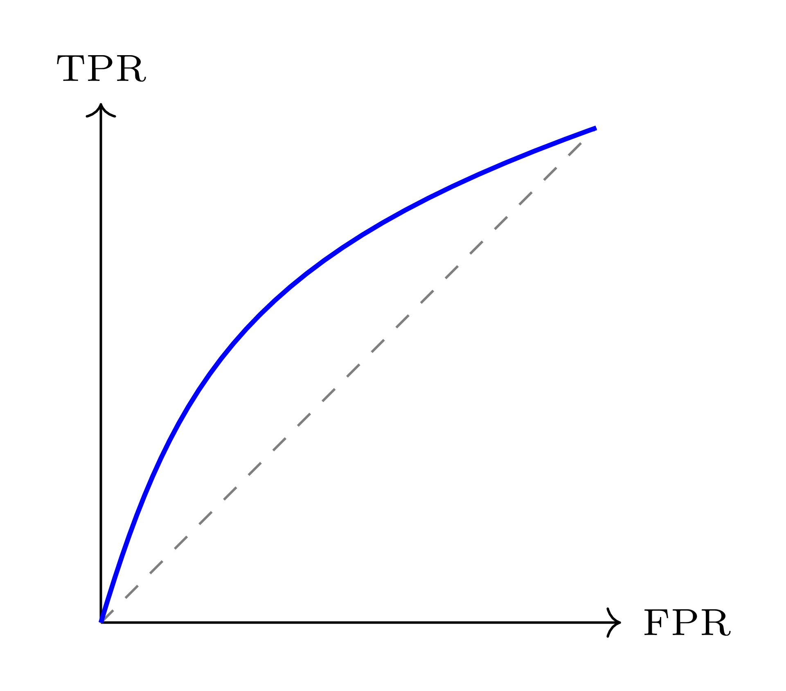
图 17.1 ROC曲线示意
note 17.5 . 相比\(\operatorname{AUROC}\) ，\(\operatorname{AUPRC}\) 更关注正类的表现。较高的\(\operatorname{AUPRC}\) 表明模型性能较好。
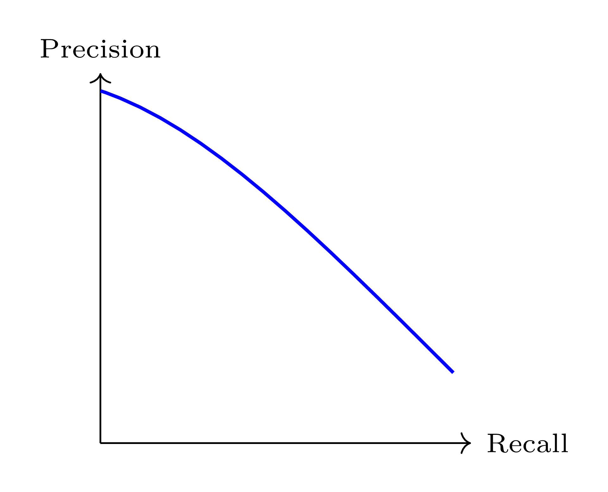
图 17.2 PR曲线示意
多分类
与二分类问题不同，多分类问题中不存在唯一的正类与负类，因此通常需要先分别考察模型在每个类别上的表现，再通过适当的平均方式得到整体评价指标。
对于任意类别\(k\in\{1,2,\dots,K\}(K\geqslant3)\) ，可将类别\(k\) 视为正类，将其余类别合并为负类，并按照二分类问题中的定义计算\(\operatorname{TP}_k\) 、\(\operatorname{FP}_k\) 、\(\operatorname{FN}_k\) 和\(\operatorname{TN}_k\) ，进而得到该类别的\(\operatorname{Precision}_k\) 、\(\operatorname{Recall}_k\) 和\(\operatorname{F1}_k\) 。这种处理方式称为one-versus-rest。
分别报告每个类别的评价指标能够完整反映模型在各类别上的表现，但当类别数量较多或需要使用单一数值比较模型时，需要进一步对各类别的指标进行汇总。常用的汇总方式包括Macro平均、Weighted平均和Micro平均。
Definition 17.9 . 设\(m_k\) 表示类别\(k\) 的某个评价指标，该指标的Macro平均定义为：
\[\begin{equation*}
m_{\mathrm{macro}}=\frac{1}{K}\sum_{k=1}^{K}m_k
\end{equation*}\]
Definition 17.10 . 设\(m_k\) 表示类别\(k\) 的某个评价指标，类别\(k\) 的真实样本数为\(n_k\) ，该指标的Weighted平均定义为：
\[\begin{equation*}
m_{\mathrm{weighted}}=\sum_{k=1}^{K}\frac{n_k}{n}m_k
\end{equation*}\]
Definition 17.11 . Micro平均定义为：
\[\begin{gather*}
\operatorname{Precision}_{\mathrm{micro}}=\frac{\sum\limits_{k=1}^{K}\operatorname{TP}_k}{\sum\limits_{k=1}^{K}(\operatorname{TP}_k+\operatorname{FP}_k)} \\
\operatorname{Recall}_{\mathrm{micro}}=\frac{\sum\limits_{k=1}^{K}\operatorname{TP}_k}{\sum\limits_{k=1}^{K}(\operatorname{TP}_k+\operatorname{FN}_k)} \\
\operatorname{F1}_{\mathrm{micro}}=2\times\frac{\operatorname{Precision}_{\mathrm{micro}}\operatorname{Recall}_{\mathrm{micro}}}{\operatorname{Precision}_{\mathrm{micro}}+\operatorname{Recall}_{\mathrm{micro}}}
\end{gather*}\]
note 17.6 . 在每个样本只有一个真实标签且模型只预测一个类别的单标签多分类问题中，每个预测正确的样本产生一个真阳性，而每个预测错误的样本同时产生一个假阳性和一个假阴性。因此：
\[\begin{equation*}
\sum_{k=1}^{K}\operatorname{FP}_k=\sum_{k=1}^{K}\operatorname{FN}_k=n-\sum_{k=1}^{K}\operatorname{TP}_k
\end{equation*}\]
从而：
\[\begin{equation*}
\operatorname{Precision}_{\mathrm{micro}}=\operatorname{Recall}_{\mathrm{micro}}=\operatorname{F1}_{\mathrm{micro}}=\operatorname{Accuracy}
\end{equation*}\]
所以在多分类问题中，同时报告Accuracy和Micro通常不会提供额外信息。
若希望所有类别具有相同的重要性，应重点考察Macro平均；若希望评价结果反映实际类别分布，可以使用Weighted平均；若希望从所有样本层面汇总分类结果，则可以使用Micro平均。
回归任务
设真实值为\(\{y_i\}_{i=1}^{n}\) ，模型预测值为\(\{\hat{y}_i\}_{i=1}^{n}\) 。
note 17.7 . MAE计算预测误差的绝对值并取平均，因而对所有误差赋予相同的线性权重。它具有易于解释、与原数据同量纲等优点，并对单个异常值不敏感。
note 17.8 . MAPE 将误差按照真实值比例归一化，适合对预测误差的相对大小进行衡量。
模型训练
训练目标与经验风险
模型训练的目的，是从给定的候选模型中选出一个能够在未知样本上取得良好预测表现的模型。为此，首先需要根据具体任务明确模型表现的评价标准。例如，在分类任务中，可以关注总体分类准确率，也可以更重视某一类别的召回率、精确率或者误分类成本。不同的评价标准体现了不同的任务需求，并决定了哪些预测结果应被认为更好、哪些预测错误应受到更大的惩罚。
评价指标主要用于衡量训练完成后的模型是否满足任务需求，但它未必适合直接作为训练时的优化目标。许多评价指标是不连续的、不可微的，或者不能分解为各个样本损失的平均。例如，分类准确率仅取决于最终预测类别是否正确。当模型的预测分数发生小幅变化但预测类别保持不变时，准确率也保持不变，因此它通常无法提供参数应当如何更新的信息。
为便于优化，训练时通常使用一个对模型输出变化更加敏感的损失函数作为代理目标。损失函数不必与评价指标具有相同的表达式，但应当与任务目标相容，即损失的减小通常能够促进所关心的预测性能改善。因此，评价指标决定模型最终应达到的目标，损失函数则将这一目标转化为可以进行参数优化的数学问题。
设观测数据集\(\mathcal{D}=\{(x_i,y_i)\}_{i=1}^{n}\) 由分布\(P\) 中的\(n\) 个独立同分布样本构成，候选模型组成函数族：
\[\begin{equation*}
\mathcal{F}=\{f_\theta:X\to\mathcal{A}:\theta\in\Theta\}
\end{equation*}\]
其中\(\mathcal{A}\) 为模型输出空间，\(\Theta\) 为参数空间。沿用点估计中的记号，记\(L:Y\times\mathcal{A}\to[0,+\infty]\) 为损失函数，则\(L[y,f_\theta(x)]\) 表示模型\(f_\theta\) 在样本\((x,y)\) 上产生的预测损失。若分布\(P\) 已知，则模型\(f_\theta\) 在来自同一分布的样本上的平均预测损失可以表示为：
\[\begin{equation*}
R(\theta)\coloneq\operatorname{E}(L)
\end{equation*}\]
称\(R(\theta)\) 为模型\(f_\theta\) 的总体风险。总体风险越小，表示模型在未知样本上产生的平均预测损失越小。因此，从预测角度看，理想的参数应满足：
\[\begin{equation*}
\theta^\ast\in\underset{\theta\in\Theta}{\arg\min}\;R(\theta)
\end{equation*}\]
然而，分布\(P\) 通常未知，因此总体风险\(R(\theta)\) 无法直接计算。训练时只能利用观测数据，以样本平均损失近似总体风险。
Definition 17.14 . 称：
\[\begin{equation*}
\hat{R}(\theta)\coloneq\frac{1}{n}\sum_{i=1}^{n}L[y_i,f_\theta(x_i)]
\end{equation*}\]
为模型\(f_\theta\) 在观测数据集\(\mathcal{D}\) 上的经验风险（empirical risk） 。
以经验风险作为训练目标时，模型训练可以表示为
\[\begin{equation*}
\hat{\theta}\in\underset{\theta\in\Theta}{\arg\min}\;\hat{R}(\theta)
\end{equation*}\]
这种通过最小化经验风险选择模型参数的方法称为经验风险最小化。由于\(\hat{R}(\theta)\) 依赖于随机抽取的观测数据，因此所得参数\(\hat{\theta}\) 也是数据的函数。
例子
下面以分类任务为例，说明如何从模型希望达到的预测效果出发构造损失函数。设类别集合为\(Y=\{1,2,\dots,K\}\) ，分类模型对输入\(x\) 输出一个概率向量：
\[\begin{equation*}
q_\theta(x)=(q_{\theta1}(x),q_{\theta2}(),\dots,q_{\theta K}(x))^{\top},\quad
q_{\theta k}(x)>0,\quad\sum_{k=1}^{K}q_{\theta k}(x)=1
\end{equation*}\]
其中，\(q_{\theta k}(x)\) 表示模型认为样本\(x\) 属于第\(k\) 类的概率。对于训练样本\((x_i,y_i)\) ，我们希望模型预测的准确率高，也即赋给真实类别\(y_i\) 的概率\(q_{\theta y_i}(x_i)\) 尽可能接近\(1\) 。
由于训练样本相互独立，模型在所有样本上为真实类别给出的概率可以合并为乘积：
\[\begin{equation*}
Q_{\mathcal{D}}(\theta)\coloneq\prod_{i=1}^{n}q_{\theta y_i}(x_i)
\end{equation*}\]
这个乘积越大，说明模型为观测到的真实类别整体赋予的概率越大。最大化\(Q_{\mathcal{D}}(\theta)\) 等价于最小化：
\[\begin{equation*}
-\frac{1}{n}\ln Q_{\mathcal{D}}(\theta)=-\frac{1}{n}\sum_{i=1}^{n}\ln q_{\theta y_i}(x_i)
\end{equation*}\]
由此可以把单个样本的损失定义为：
\[\begin{equation*}
L[y_i,q_\theta(x_i)]\coloneq-\ln q_{\theta y_i}(x_i)
\end{equation*}\]
称该损失为逐样本的交叉熵（cross entropy） 损失。当\(q_{\theta y_i}(x_i)\) 接近\(1\) 时，该损失接近\(0\) ；当\(q_{\theta y_i}(x_i)\) 接近\(0\) 时，该损失趋于\(+\infty\) 。因此，模型不仅会因预测类别错误而受到惩罚，还会因确信程度不足而产生较大的损失。相应的经验风险为：
\[\begin{equation*}
\hat{R}(\theta)\coloneq\frac{1}{n}\sum_{i=1}^{n}L[y_i,q_\theta(x_i)]=-\frac{1}{n}\sum_{i=1}^{n}\ln q_{\theta y_i}(x_i)
\end{equation*}\]
过拟合
经验风险\(\hat{R}(\theta)\) 只度量模型在观测数据集上的平均损失，总体风险\(R(\theta)\) 则度量模型对同一分布中新样本的平均损失，二者通常并不相等。
有时持续降低\(\hat{R}(\theta)\) 未必会同时降低\(R(\theta)\) ：模型可能不是在提取能够推广到新样本的稳定规律，而是利用观测数据中的偶然噪声、异常点甚至样本的细微特征，对有限训练集作近似记忆。此时训练损失较低，而新样本上的损失较高，这种现象称为过拟合（overfitting） 。
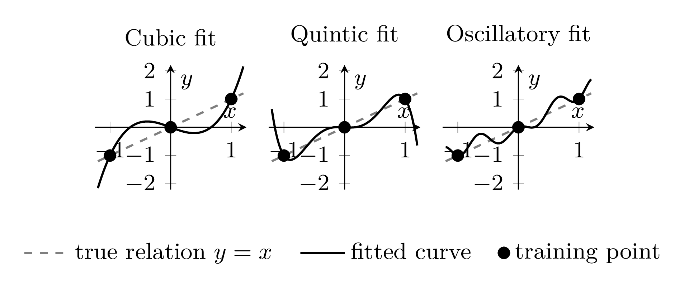
图 17.3 取自y = x
从图 17.3 可以看出，三条复杂程度不同的曲线都完美地拟合了由三个观测点构成的观测数据集，因此它们在该观测集上取得了相同且最小的经验风险\(\hat{R}(\theta)\) 。然而，在训练样本之外，若新的观测仍来自真实关系\(y=x\) ，这些模型会产生较大的预测误差，即它们存在过拟合的现象。由此可见，仅凭观测数据上的经验风险无法判断模型的真实预测能力；即使多个模型具有相同的训练误差，它们的总体风险\(R(\theta)\) 也可能存在显著差异。
综上，我们需要关注差值：
\[\begin{equation*}
R(\theta)-\hat{R}(\theta)
\end{equation*}\]
它反映了模型从观测数据推广到新数据时的性能差异。
训练集、验证集与测试集
计算上述差值需要计算\(R(\theta)\) ，但是由于分布\(P\) 未知，\(R(\theta)\) 通常无法直接计算，只能通过未参与训练的数据加以估计，所以我们通常将原始数据随机划分为三个互不相交的部分：
\[\begin{equation*}
\mathcal{D}=\mathcal{D}_{\mathrm{train}}\cup\mathcal{D}_{\mathrm{val}}\cup\mathcal{D}_{\mathrm{test}}
\end{equation*}\]
分别称为训练集（training set） 、验证集（validation set） 和测试集（test set） 。三者应当尽可能来自相同的目标分布；对于类别不平衡的分类问题，通常采用分层抽样，使各部分的类别比例大致一致。
Method 17.1 . 数据集划分后的模型训练与选择通常按下列顺序进行：
在训练集\(\mathcal{D}_{\mathrm{train}}\) 上估计模型的可学习参数\(\theta\) ；
在验证集\(\mathcal{D}_{\mathrm{val}}\) 上比较不同模型的性能，并据此选择模型；
确定全部建模方案后，只在测试集\(\mathcal{D}_{\mathrm{test}}\) 上进行一次最终评价，报告模型对未见数据的性能估计。
验证集虽然不参与参数的直接拟合，却参与模型选择；若反复根据测试集结果修改模型，测试集实际上也参与了训练流程，其评价结果便会过于乐观。因此，测试集必须与整个训练和选择过程隔离。数据预处理也应遵循相同原则：缺失值填补、标准化、特征选择等步骤只能在训练集上估计所需参数，再将已经确定的变换应用到验证集和测试集，不能提前利用后两者的信息。
当样本量较小时，如果再从训练数据中单独划分一个固定的验证集会进一步减少模型实际用于训练的样本。此时可以在训练数据内部使用\(K\) 折交叉验证（cross validation, CV） ：将训练数据近似均匀地分为\(K\) 份，依次将其中一份作为验证集，其余\(K-1\) 份作为训练集，共进行\(K\) 轮训练与验证，并对\(K\) 次验证结果取平均，以评价候选模型。此时仍应保留独立测试集；交叉验证用于模型选择，测试集只用于最终评价。
正则化与模型空间约束
对\(f=f_\theta\in\mathcal{F}\) ，记\(\hat{R}_{\mathrm{train}}(f)\coloneq\hat{R}_{\mathrm{train}}(\theta)\) 及\(R(f)\coloneq R(\theta)\) 。
若\(\mathcal{F}_1\subseteq\mathcal{F}_2\) ，则：
\[\begin{equation*}
\inf_{f\in\mathcal{F}_2}\hat{R}_{\mathrm{train}}(f)\leqslant\inf_{f\in\mathcal{F}_1}\hat{R}_{\mathrm{train}}(f)
\end{equation*}\]
也就是说，扩大模型空间不会使最优训练风险变大，因为新增的模型为拟合训练数据提供了更多选择；但总体风险并不具有相同的单调性。模型空间越大，训练过程越容易从大量候选模型中找到一个恰好迎合当前样本偶然性的模型，因而经验风险虽然可以很低，经验风险与总体风险之间的偏差却更难控制。极端情况下，一个足够复杂的模型可以记住每个训练样本，使训练风险接近\(0\) ；但训练样本之外的函数取值仍可能几乎不受约束，这正是过拟合产生的原因。
Definition 17.15 . 设\(\Omega:\mathcal{F}\to[0,+\infty]\) 为模型复杂度函数，\(\Omega(f)\) 越大表示模型\(f\) 越复杂。对\(c\geqslant0\) ，定义受限模型空间：
\[\begin{equation*}
\mathcal{F}_c\coloneq\{f\in\mathcal{F}:\Omega(f)\leqslant c\}
\end{equation*}\]
在\(\mathcal{F}_c\) 中最小化经验风险：
\[\begin{equation*}
\hat{f}_c\in\underset{f\in\mathcal{F}_c}{\arg\min}\hat{R}_{\mathrm{train}}(f)
\end{equation*}\]
称为约束形式的正则化（regularization） 。其中，\(c\) 称为复杂度上界。
实际计算中更常使用正则化的惩罚形式：
\[\begin{equation*}
\hat{f}_\lambda\in\underset{f\in\mathcal{F}}{\arg\min}\left\{\hat{R}_{\mathrm{train}}(f)+\lambda\Omega(f)\right\},\;\lambda\geqslant0
\end{equation*}\]
其中，\(\hat{R}_{\mathrm{train}}(f)+\lambda\Omega(f)\) 称为正则化目标函数，\(\lambda\) 称为正则化强度（regularization strength） 。当\(\lambda=0\) 时，该问题退化为原来的经验风险最小化；\(\lambda\) 越大，模型复杂度在目标函数中付出的代价越大，训练过程便越倾向于选择简单模型。
note 17.9 . 限制模型空间的本质是在拟合训练数据与控制模型复杂度避免过拟合之间取得平衡：模型空间过小会导致模型无法很好的拟合训练数据，也即欠拟合（underfitting） ，模型空间过大会导致过拟合。
树模型
信息度量与分裂准则
信息量
Definition 17.16 . 设\((X,\mathscr{A},P)\) 为概率空间，\(f\) 是\(X\) 上的离散型随机变量，\(f\) 的取值集合为\(\{x_n\}\) 。称\(-\log_2[P(f=x_n)]\) 为事件\(\{f=x_n\}\) 的自信息量（self-information） ，记作\(I(f=x_n)\) ，其中\(P(f=x_n)>0\) 。
note 17.10 . 为什么信息量这么定义呢？信息量应该具有如下两个性质：
一件事发生的概率越小，那么这件事发生后产生的信息量越大；
如果两件事情独立，那么这两件事情都发生所产生的信息量应该等于每件事情各自发生产生的信息量之和。
由(1)，\(I(f=x_n)\) 需要随\(P(f=x_n)\) 单调下降；由(2)，\(I(f=x_n)\) 应具有对数的形式。
Definition 17.17 . 设\((X,\mathscr{A},P)\) 为概率空间，\(f\) 是\(X\) 上的离散型随机变量，\(f\) 的取值集合为\(\{x_n\}\) 。约定\(P(f=x_n)=0\) 时\(P(f=x_n)I(f=x_n)=0\) ，称\(H(f)=\operatorname{E}[I(f)]\) 为\(f\) 的信息熵（information entropy） ，由样本得到的经验分布计算出的信息熵被称为经验熵（empirical entropy） 。
证明 .
(2)由性质 8.0.8(3) 可知\(-\log_2(x)\) 在\((0,+\infty)\) 上为凸函数，根据不等式 10 可得：
\[\begin{align*}
H(f)&=\operatorname{E}[I(f)]=-\sum_{i=1}^{n}P(f=x_i)\log_2[P(f=x_i)]=\sum_{i=1}^{n}P(f=x_i)\log_2\left[\frac{1}{P(f=x_i)}\right] \\
&\leqslant\log_2\left[\sum_{i=1}^{n}P(f=x_i)\frac{1}{P(f=x_i)}\right]=\log_2(n)
\end{align*}\]
上式取等当且仅当\(\dfrac{1}{P(f=x_i)}\) 为常数，即\(P(f=x_1)=P(f=x_2)=\cdots=P(f=x_n)\) 。 ◻
对于二分类样本，记第一类样本比例为\(p\) ，第二类比例为\(1-p\) ，则信息熵为\(H(p)=-p\log_2p-(1-p)\log_2(1-p)\) 。如下图所示，只含一个类别时熵为\(0\) ；两类各占一半时不确定性最大。
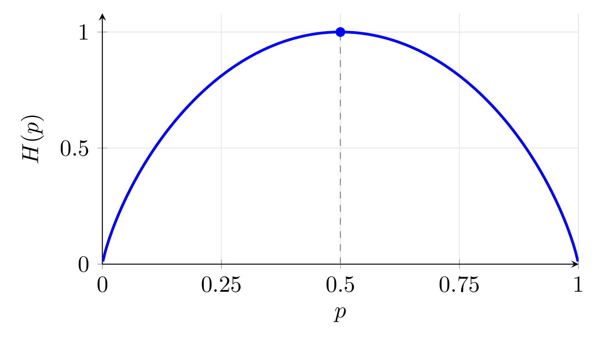
图 17.4 二分类样本的信息熵。p = 0.5
Gini系数
Definition 17.18 . 设分类问题的类别空间为\(Y=\{1,\dots,m\}\) ，\(\mathcal{D}=\{(x_i,y_i)\}_{i=1}^n\) 为观测样本集，其中\(y_i\in Y\) 表示第\(i\) 个样本的真实类别，记\(p_i\) 为第\(i\) 类样本在\(\mathcal{D}\) 中所占比例。称：
\[\begin{equation*}
\operatorname{Gini}(\mathcal{D})=1-\sum_{i=1}^Kp_i^2
\end{equation*}\]
为观测样本集\(\mathcal{D}\) 的基尼指数（Gini index） 。
Property 17.3.2 . 设分类问题的类别空间为\(Y=\{1,2,\dots,K\}\) ，\(\mathcal{D}=\{(x_i,y_i)\}_{i=1}^n\) 为观测样本集，其中\(y_i\in Y\) 表示第\(i\) 个样本的真实类别，记\(p_i\) 为第\(i\) 类样本在\(\mathcal{D}\) 中所占比例。Gini指数具有如下性质：
Gini指数是在样本集合中独立、有放回地抽取两个样本时，它们属于不同类别的概率；
\(\operatorname{Gini}(\mathcal{D})\leqslant1-\dfrac{1}{K}\) ，上式取等当且仅当\(p_1=p_2=\cdots=p_K=\dfrac{1}{K}\) 。
证明 .
(2)由不等式 1 可得：
\[\begin{equation*}
\left(\sum_{i=1}^{K}1^2\right)\left(\sum_{i=1}^{K}p_i^2\right)\geqslant\left(\sum_{i=1}^{K}p_i\right)^2=1
\end{equation*}\]
上式取等当且仅当\(p_1=p_2=\cdots=p_K=\frac{1}{K}\) ，因此：
\[\begin{equation*}
\operatorname{Gini}(\mathcal{D})=1-\sum_{i=1}^{K}p_i^2\leqslant1-\frac{1}{K}
\end{equation*}\]
◻
note 17.11 . 由性质 17.3.2(1)(2) 可以看出Gini指数可以用来刻画样本类别分布的不纯度。当所有样本属于同一类别时\(\operatorname{Gini}(\mathcal{D})=0\) ，表示完全纯净；当类别分布均匀时\(\operatorname{Gini}(\mathcal{D})\) 达到最大值，表示类别混杂程度最高。
对于二分类样本，Gini指数可写为\(G(p)=1-p^2-(1-p)^2=2p(1-p)\) 。它与信息熵具有相同的对称性，但计算形式更简单。
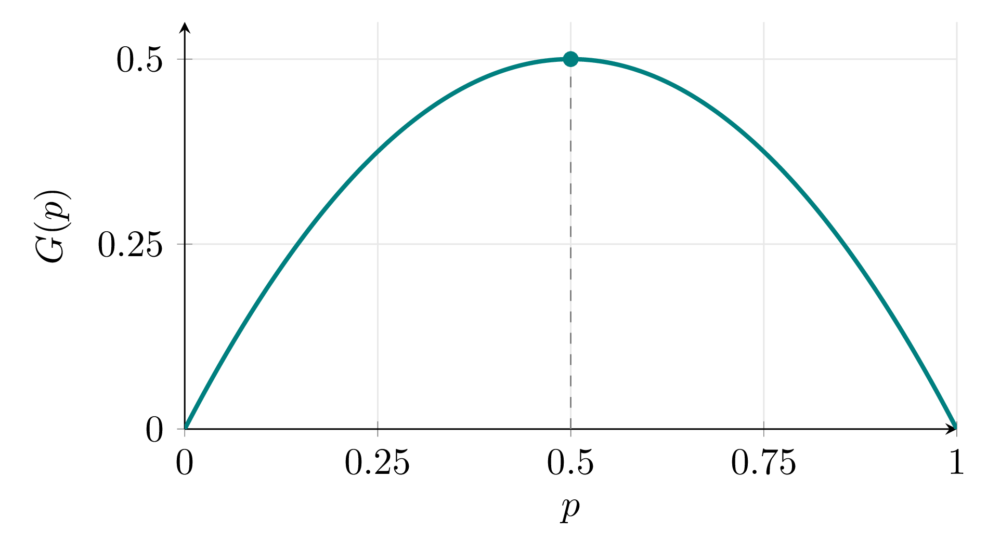
图 17.5 二分类样本的Gini指数。节点越接近单一类别，Gini指数越接近0 。
决策树
从判断规则到决策树
人们在进行判断时，往往不会同时综合所有信息后直接给出结论，而是依次提出若干问题，并根据每个问题的答案决定接下来应当考虑什么。例如，医生在进行初步问诊时，可能根据患者的体温、全身肌肉酸痛以及近期接触史，判断患者是否需要进一步接受流感检测。为了说明决策树的基本思想，考虑如下简化的判断规则：
首先判断患者的体温是否高于\(38\,^\circ\mathrm{C}\) 。若体温高于\(38\,^\circ\mathrm{C}\) ，则继续判断患者是否存在明显的全身肌肉酸痛：若存在，则建议进行流感检测；若不存在，则暂不建议进行流感检测。
若患者的体温不高于\(38\,^\circ\mathrm{C}\) ，则继续询问其近期是否与流感患者有过密切接触：若有密切接触，则建议进行流感检测；若没有密切接触，则暂不建议进行流感检测。
这里的判断并不是一次完成的，而是由若干个简单问题依次组成。可以将这一系列判断规则表示为一棵树：
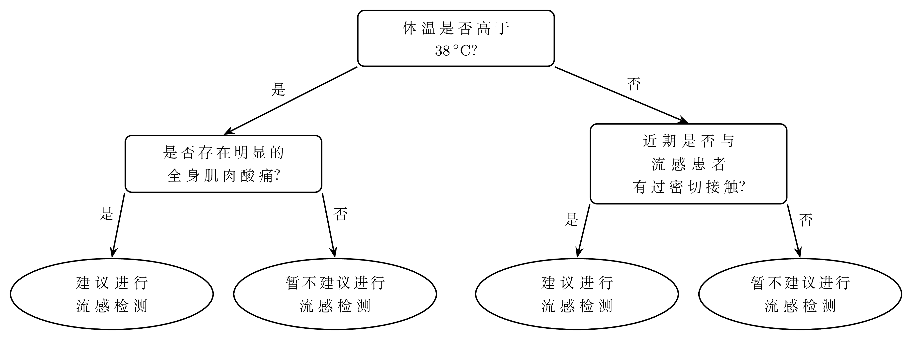
图 17.6 由一系列问诊规则构成的决策树示例
在图 17.6 中，最上方的问题是整个判断过程的起点，称为根节点（root node） ；中间包含判断规则的节点称为内部节点；每个问题的不同答案对应从该节点出发的一条分支；不再提出新问题、而是直接给出预测结果的节点称为叶节点（leaf node） 。从根节点出发，沿着每次判断所选择的分支，最终到达某个叶节点，这一系列连续的判断构成一条路径。每条路径都可以看作一组判断规则的组合，而每个叶节点则对应满足这些规则的一类样本。
决策树正是将这种基于连续提问的经验判断转化为一种可以从数据中学习的预测方法。给定训练数据集\(\mathcal{D}=\{(x_i,y_i)\}_{i=1}^{n}\) ，决策树需要完成两个任务：首先，从样本特征中选择适当的判断问题；其次，根据训练样本决定每条判断路径最终应当给出什么预测结果。
对于数值型特征，第\(j\) 个特征和阈值\(\tau\) 可以构成一个二元判断问题：
\[\begin{equation*}
x_j\leqslant\tau\;?
\end{equation*}\]
根据该问题的答案，可以将当前节点中的数据集\(\mathcal{D}_t\) 划分为两个部分：
\[\begin{equation*}
\mathcal{D}_{tL}(j,\tau)=\{(x,y)\in\mathcal{D}_t:x_j\leqslant\tau\},\quad\mathcal{D}_{tR}(j,\tau)=\{(x,y)\in\mathcal{D}_t:x_j>\tau\}
\end{equation*}\]
其中\(\mathcal{D}_{tL}(j,\tau)\) 和\(\mathcal{D}_{tR}(j,\tau)\) 分别对应判断问题的两个答案，也就是当前节点产生的两个子节点。决策树随后在每个子节点中继续寻找新的判断问题，并重复这一划分过程。因此，决策树的构造过程具有递归结构：一个节点被划分为两个子节点，而每个子节点又可以继续被划分，直到满足某种停止条件。
从几何上看，每个判断规则都会对特征空间施加一个限制条件。例如，一条由如下判断组成的路径：
\[\begin{equation*}
x_{j_1}\leqslant\tau_1,\quad x_{j_2}>\tau_2,\quad x_{j_3}\leqslant\tau_3
\end{equation*}\]
对应特征空间中的一个区域：
\[\begin{equation*}
R_t=\left\{x:x_{j_1}\leqslant\tau_1,\;x_{j_2}>\tau_2,\;x_{j_3}\leqslant\tau_3\right\}
\end{equation*}\]
所有落入同一个区域\(R_t\) 的样本最终到达同一个叶节点，并共享相同的预测规则。因此，决策树本质上将特征空间划分为若干互不重叠的区域，并在每个区域内使用一个简单的局部预测。
在分类问题中，设叶节点\(t\) 包含的数据集为\(\mathcal{D}_t\) ，其中第\(k\) 类样本所占的比例为：
\[\begin{equation*}
\hat{p}_{tk}=\frac{1}{|\mathcal{D}_t|}\sum_{(x,y)\in\mathcal{D}_t}I(y=k),\;k=1,2,\dots,K
\end{equation*}\]
对于落入该叶节点的新样本\(x\) ，决策树将\(\hat{p}_{tk}\) 作为类别\(k\) 的预测概率，并将样本预测为该节点中的多数类别：
\[\begin{equation*}
\hat{y}(x)=\underset{1\leqslant k\leqslant K}{\arg\max}\;\hat{p}_{tk}
\end{equation*}\]
在回归问题中，同一个叶节点中的样本共享一个常数预测值\(\hat{c}_t\) ：
\[\begin{equation*}
\hat{y}(x)=\hat{c}_t,\;x\in R_t
\end{equation*}\]
根据所选择的损失函数，\(\hat{c}_t\) 可以取节点中响应变量的均值、中位数或者其他适当的统计量，原则是使得损失函数值最小。
由此可见，一个判断规则是否合理，关键在于它是否将具有相似响应结果的样本分到一起。对于分类树，我们希望同一节点中的样本尽可能属于相同类别；对于回归树，我们希望同一节点中的响应值尽可能接近。换言之，决策树需要寻找能够使子节点中的响应变量更加同质的判断规则。
为了比较不同判断规则的优劣，首先需要度量一个节点中的响应变量究竟有多混杂。这个量称为节点不纯度（node impurity） 。
节点不纯度
设\(\mathcal{D}\) 是某个节点中的数据集。在该节点不再继续划分时，所有样本将共享同一个局部预测。对于给定损失函数\(L\) ，可以将节点不纯度统一定义为节点内最优常数预测所达到的最小平均经验损失：
\[\begin{equation*}
I_{L}(\mathcal{D})=\underset{a\in\mathcal{A}}{\min}\;\frac{1}{|\mathcal{D}|}\sum_{(x,y)\in\mathcal{D}}L(y,a)
\end{equation*}\]
其中\(\mathcal{A}\) 表示允许的节点预测空间。节点不纯度越小，说明使用单一预测描述该节点中的所有样本所造成的损失越小，因而节点中的响应变量越同质。
在分类问题中，由性质 17.3.1(2) 和性质 17.3.2(2) 可知，信息熵与Gini不纯度都可以用于衡量节点中的类别分布是否集中。当节点中的样本全部属于同一类别时，二者均为\(0\) ；类别分布越分散，二者的取值越大。因此，它们都可以作为分类树中的节点不纯度指标。
在回归问题中，若使用平方误差损失：
\[\begin{equation*}
L(y,c)=(y-c)^2
\end{equation*}\]
则最优节点预测为样本均值：
\[\begin{equation*}
\hat{c}=\bar{y}=\frac{1}{n}\sum_{(x,y)\in\mathcal{D}}y
\end{equation*}\]
对应的节点不纯度为：
\[\begin{equation*}
I_{\mathrm{SE}}(\mathcal{D})=\frac{1}{n}\sum_{(x,y)\in\mathcal{D}}(y-\hat{c})^2
\end{equation*}\]
若使用绝对误差损失：
\[\begin{equation*}
L(y,c)=|y-c|
\end{equation*}\]
则最优节点预测为样本中位数：
\[\begin{equation*}
\hat{c}=\operatorname{median}\{y:(x,y)\in\mathcal{D}\}
\end{equation*}\]
对应的节点不纯度为：
\[\begin{equation*}
I_{\mathrm{AE}}(\mathcal{D})=\frac{1}{n}\sum_{(x,y)\in\mathcal{D}}|y-\hat{c}|
\end{equation*}\]
在给定数据集和准则后，节点不纯度的计算过程可总结为算法 17.1 。
Algorithm 17.1 Node Impurity
Input: Nonempty node dataset \(\mathcal{D}\) and splitting criterion
Output: Node impurity \(I(\mathcal{D})\)
if criterion \(\in
\{\texttt{gini},\texttt{entropy}\}\) then
Let the class label set be \(\{1,\dots,m\}\)
\(n_i\gets|\{(x,y)\in\mathcal{D}:y=i\}|\) , \(p_i\gets n_i/|\mathcal{D}|\) , \(i=1,\dots,m\)
if criterion \(=\texttt{gini}\) then
\(I(\mathcal{D})\gets
1-\sum\limits_{i=1}^mp_i^2\)
else if criterion \(=\texttt{entropy}\) then
\(I(\mathcal{D})\gets
-\sum\limits_{\{i:p_i>0\}}p_i\log p_i\) （\(0\log0\) is interpreted as \(0\) ）
else if criterion \(=\texttt{squared error}\) then
\(\bar{y}\gets
|\mathcal{D}|^{-1}\sum\limits_{(x,y)\in\mathcal{D}}y\)
\(I(\mathcal{D})\gets
|\mathcal{D}|^{-1}\sum\limits_{(x,y)\in\mathcal{D}}(y-\bar{y})^2\)
else if criterion \(=\texttt{absolute error}\) then
\(\widetilde{y}\gets
\operatorname{median}\{y:(x,y)\in\mathcal{D}\}\)
\(I(\mathcal{D})\gets
|\mathcal{D}|^{-1}\sum\limits_{(x,y)\in\mathcal{D}}|y-\widetilde{y}|\)
return \(I(\mathcal{D})\)
寻找最优划分
节点不纯度衡量的是单个节点内部的同质程度。接下来需要判断某个划分规则能否使划分后的两个子节点比原节点更加同质。
对于候选划分\(s=(j,\tau)\) ，记划分后的数据集为：
\[\begin{equation*}
\mathcal{D}_L(s)=\mathcal{D}_L(j,\tau),\quad\mathcal{D}_R(s)=\mathcal{D}_R(j,\tau)
\end{equation*}\]
由于两个子节点包含的样本量可能不同，划分后的总体不纯度定义为两个子节点不纯度的样本量加权平均：
\[\begin{equation*}
I_{\mathrm{split}}(s;\mathcal{D})=\frac{|\mathcal{D}_L(s)|}{|\mathcal{D}|}I[\mathcal{D}_L(s)]+\frac{|\mathcal{D}_R(s)|}{|\mathcal{D}|}I[\mathcal{D}_R(s)]
\end{equation*}\]
该划分带来的不纯度下降为：
\[\begin{equation*}
\Delta I(s;\mathcal{D})=I(\mathcal{D})-I_{\mathrm{split}}(s;\mathcal{D})
\end{equation*}\]
因此，最优划分可以等价地定义为使划分后不纯度最小的规则：
\[\begin{equation*}
s^{\ast}=\underset{s\in\mathcal{S}(\mathcal{D})}{\arg\min}\;I_{\mathrm{split}}(s;\mathcal{D})
\end{equation*}\]
或者使不纯度下降最大的规则：
\[\begin{equation*}
s^{\ast}=\underset{s\in\mathcal{S}(\mathcal{D})}{\arg\max}\;\Delta I(s;\mathcal{D})
\end{equation*}\]
其中\(\mathcal{S}(\mathcal{D})\) 表示当前节点中允许使用的候选划分集合。
对于数值型特征，通常将相邻不同观测值的中点作为候选阈值。若特征\(j\) 在当前节点中的不同取值为：
\[\begin{equation*}
v_1<v_2<\cdots<v_q
\end{equation*}\]
则候选阈值集合可以取为：
\[\begin{equation*}
\left\{\frac{v_r+v_{r+1}}{2}:r=1,2,\dots,q-1\right\}
\end{equation*}\]
为了避免产生仅包含极少量样本的子节点，还可以要求
\[\begin{equation*}
|\mathcal{D}_L(s)|\geqslant N_{\mathrm{leaf}},\quad|\mathcal{D}_R(s)|\geqslant N_{\mathrm{leaf}}
\end{equation*}\]
不满足该条件的候选划分不参与最优划分的比较。
遍历所有特征及其候选阈值并选择最优划分的过程可总结为算法 17.2 。
Algorithm 17.2 Find the Best Binary Split
Input: Dataset \(\mathcal{D}\) , feature set \(\mathcal{F}\) , splitting criterion, minimum samples per leaf \(N_{\mathrm{leaf}}\)
Output: Best split \((F^\ast,\tau^\ast,I_{\mathrm{split}}^\ast)\) or None
\(I_{\mathrm{split}}^\ast\gets+\infty\) , \((F^\ast,\tau^\ast)\gets\texttt{None}\)
for each feature \(F\in\mathcal{F}\) do
Let \(v_1<\cdots<v_q\) be the distinct observed values of feature \(F\) in \(\mathcal{D}\)
continue （Feature \(F\) is constant on the current node）
\(\mathcal{T}_F\gets
\{(v_j+v_{j+1})/2:j=1,\dots,q-1\}\)
for each candidate threshold \(\tau\in\mathcal{T}_F\) do
\(\mathcal{D}_L\gets
\{(x,y)\in\mathcal{D}:x[F]\leqslant\tau\}\) , \(\mathcal{D}_R\gets
\{(x,y)\in\mathcal{D}:x[F]>\tau\}\)
if \(|\mathcal{D}_L|<N_{\mathrm{leaf}}\) or \(|\mathcal{D}_R|<N_{\mathrm{leaf}}\) then
continue （The split would create an undersized leaf）
\(I_L\gets
\operatorname{NodeImpurity}\!\left(\mathcal{D}_L,\text{criterion}\right)\) , \(I_R\gets
\operatorname{NodeImpurity}\!\left(\mathcal{D}_R,\text{criterion}\right)\)
\(I_{\mathrm{candidate}}\gets
\dfrac{|\mathcal{D}_L|}{|\mathcal{D}|}I_L+
\dfrac{|\mathcal{D}_R|}{|\mathcal{D}|}I_R\)
if \(I_{\mathrm{candidate}}<I_{\mathrm{split}}^\ast\) then
\(I_{\mathrm{split}}^\ast\gets
I_{\mathrm{candidate}}\) , \((F^\ast,\tau^\ast)\gets(F,\tau)\)
if \((F^\ast,\tau^\ast)=\texttt{None}\) then
return \((F^\ast,\tau^\ast,I_{\mathrm{split}}^\ast)\)
完整算法
完整的分类回归树（classification and regression tree, CART） 对应的决策树生长过程可总结为算法 17.3 。本文的算法不包含CART树生长完成后的代价复杂度后剪枝过程。
Algorithm 17.3 Classification and Regression Tree
Input: Dataset \(\mathcal{D}\) , feature set \(\mathcal{F}\) , maximum depth \(D_{\max}\) , minimum samples to split \(N_{\mathrm{split}}\) , minimum samples per leaf \(N_{\mathrm{leaf}}\) , minimum impurity decrease \(\Delta_{\min}\) , splitting criterion
Output: Root node \(T\) of the fitted decision tree
function CreateLeaf (\(\mathcal{D}\) )
if criterion \(\in\{\texttt{gini},\texttt{entropy},\texttt{cross entropy}\}\) then
Let the class label set be \(\{1,2,\dots,K\}\)
\(n_i\gets|\{(x,y)\in\mathcal{D}:y=i\}|\) , \(p_i\gets n_i/|\mathcal{D}|\) , \(i=1,2,\dots,K\)
\(\hat{y}\gets\underset{1\leqslant i\leqslant K}{\arg\max}\;p_i\)
return \(\{\text{type: \texttt{leaf}},\text{ prediction: }\hat{y},
\text{ class probabilities: }(p_1,p_2,\dots,p_K)\}\)
else if criterion \(=\texttt{squared error}\) then
\(\hat{y}\gets|\mathcal{D}|^{-1}
\sum\limits_{(x,y)\in\mathcal{D}}y\)
return \(\{\text{type: \texttt{leaf}},\text{ prediction: }\hat{y}\}\)
else if criterion \(=\texttt{absolute error}\) then
\(\hat{y}\gets
\operatorname{median}\{y:(x,y)\in\mathcal{D}\}\)
return \(\{\text{type: \texttt{leaf}},\text{ prediction: }\hat{y}\}\)
function BuildTree (\(\mathcal{D},d\) )
if \(|\mathcal{D}|<N_{\mathrm{split}}\) or \(d\geqslant D_{\max}\) or all responses in \(\mathcal{D}\) are identical or no feature in \(\mathcal{F}\) varies on \(\mathcal{D}\) then
return CreateLeaf (\(\mathcal{D}\) ) （Stopping rules）
\(I_{\mathrm{parent}}\gets
\operatorname{NodeImpurity}\!\left(\mathcal{D},\text{criterion}\right)\)
\(S\gets
\operatorname{FindBestSplit}\!\left(\mathcal{D},\mathcal{F},\text{criterion},N_{\mathrm{leaf}}\right)\)
if \(S=\texttt{None}\) then
return CreateLeaf (\(\mathcal{D}\) )
\((F,\tau,I_{\mathrm{split}})\gets S\) , \(\Delta\gets I_{\mathrm{parent}}-I_{\mathrm{split}}\)
if \(\Delta<\Delta_{\min}\) then
return CreateLeaf (\(\mathcal{D}\) ) （Insufficient impurity decrease）
\(\mathcal{D}_L\gets
\{(x,y)\in\mathcal{D}:x[F]\leqslant\tau\}\) , \(\mathcal{D}_R\gets
\{(x,y)\in\mathcal{D}:x[F]>\tau\}\)
\(T\gets
\{\text{type: \texttt{node}},
\text{ feature: }F,
\text{ threshold: }\tau,
\text{ impurity: }I_{\mathrm{parent}},
\text{ impurity decrease: }\Delta,
\text{ sample size: }|\mathcal{D}|\}\)
\(T.\text{left}\gets
\operatorname{BuildTree}\!\left(\mathcal{D}_L,d+1\right)\) , \(T.\text{right}\gets
\operatorname{BuildTree}\!\left(\mathcal{D}_R,d+1\right)\)
return BuildTree (\(\mathcal{D},0\) )
前述算法框不仅规定了如何选择最优划分，还通过若干停止条件限制决策树的继续生长。这些条件属于决策树的预剪枝（pre-pruning） 机制，其目的在于避免模型为追求训练集上的局部改进而形成过于复杂的树，从而降低过拟合的风险。
如果不限制树的生长，决策树可以不断划分特征空间，甚至为少数异常样本或者错误标记的样本建立单独的叶节点。此时训练误差可能非常小，但模型学习到的往往是训练样本中的随机波动，而不是总体中稳定的规律。在本文给出的CART生长算法中，\(D_{\max}\) 直接限制树的深度，即样本从根节点到叶节点所经过的路径长度；\(N_{\mathrm{split}}\) 阻止样本量过小的节点继续划分；\(N_{\mathrm{leaf}}\) 防止划分产生仅包含少数样本的叶节点；\(\Delta_{\min}\) 则要求一次划分必须带来足够明显的不纯度下降。上述参数从树的深度、节点样本量和划分收益等不同方面限制树的生长，共同控制决策树的复杂度。
因此，决策树算法的完整逻辑可以概括为：节点不纯度规定什么叫作响应同质；最优划分寻找能够最大程度提高同质性的局部规则；递归生长将这些局部规则组合为完整的预测路径；复杂度约束则防止树为了降低训练误差而不断拟合样本噪声。
特征重要性
决策树模型可以根据各特征在所有分裂节点上带来的纯度改进衡量该特征的重要性，某一特征若多次被用于关键节点划分，并且能够带来更明显的纯度提升，则说明该特征对样本区分和结果预测具有更重要的作用。由于不同节点包含的样本数可能相差很大，发生在树根附近的划分通常影响较多样本，而发生在树的深层节点中的划分只影响少量样本。因此，还需要根据当前节点所包含的样本比例对不纯度下降进行加权。设根节点中的完整训练数据集为\(\mathcal{D}_0\) ，节点\(t\) 中的数据集为\(\mathcal{D}_t\) ，该节点采用的划分规则为\(s_t^{\ast}=(j_t,\tau_t)\) ，则特征\(j\) 的未归一化重要性定义为：
\[\begin{equation*}
\widetilde{\operatorname{FI}}_j=\sum_{\substack{t\text{为非叶节点} \\ j_t=j}}\frac{|\mathcal{D}_t|}{|\mathcal{D}_0|}\Delta I(s_t^{\ast};\mathcal{D}_t)
\end{equation*}\]
也就是说，需要将所有使用特征\(j\) 进行划分的节点找出，并将这些节点带来的加权不纯度下降累加起来。最后对所有特征的重要性进行归一化，得到：
\[\begin{equation*}
\operatorname{FI}_j=\frac{\widetilde{\operatorname{FI}}_j}{\sum\limits_{k=1}^p\widetilde{\operatorname{FI}}_k}
\end{equation*}\]
这一指标通常称为基于不纯度下降的特征重要性。该得分越高，表明该特征在决策树模型中的作用越显著，对最终预测结果的影响也越大。
随机森林
单棵决策树采用自上而下的贪心策略：在每个节点上，只根据当前到达该节点的样本选择局部最优的划分，而一旦划分确定，后续节点便只能在由该划分得到的子样本上继续生长。因此，靠近根节点的划分不仅决定样本最初被如何分组，还会改变之后各个节点所面对的数据，从而影响整棵子树的结构。
当训练样本发生轻微变化时，原本表现接近的几个候选划分可能交换优劣次序，使算法选择不同的划分变量或划分点。若这种变化发生在靠近根节点的位置，大量样本会被重新分配到不同的分支，后续所有划分都可能随之改变，最终形成结构和预测结果差异显著的决策树。因此，单棵决策树对训练数据中的随机扰动较为敏感，通常具有较大的方差。
为了减小这种不稳定性，可以利用不同的训练样本生成\(B\) 棵决策树\(T_1,T_2,\dots,T_B\) ，再将它们的预测结果聚合起来。对于回归任务，通常取各棵树预测的平均值：
\[\begin{equation*}
f_{\mathrm{bag}}(x)=\frac{1}{B}\sum_{b=1}^{B}T_b(x)
\end{equation*}\]
对于类别集合\(Y=\{1,2,\dots,K\}\) 上的分类任务，通常采用多数投票：
\[\begin{equation*}
f_{\mathrm{bag}}(x)=\underset{1\leqslant k\leqslant K}{\arg\max}\;
\sum_{b=1}^{B}I[T_b(x)=k]
\end{equation*}\]
这种聚合之所以能够改善单棵树的预测，可以由下面的性质说明。
Property 17.3.3 . 在固定样本点\(x\) 处，树的集成模型具有如下性质：
若任意一棵树的预测均满足\(\operatorname{Var}[T_b(x)]=\sigma^2\) ，且任意两棵不同的树均满足\(\operatorname{Corr}[T_b(x),T_{b'}(x)]=\rho\) ，则平均预测的方差为：
\[\begin{equation*}
\operatorname{Var}[f_{\mathrm{bag}}(x)]=\sigma^2\left(\rho+\frac{1-\rho}{B}\right)
\end{equation*}\]
对于二分类任务，设\(B\) 为奇数，每棵树在\(x\) 处出错的概率均为\(p<1/2\) 。若各棵树的错误事件相互独立，则多数投票出错的概率满足：
\[\begin{equation*}
P[f_{\mathrm{bag}}(x)\ne y]\leqslant\exp\left[-2B\left(\frac{1}{2}-p\right)^2\right]
\end{equation*}\]
证明 . 性质 6.3.4(3) 和性质 6.3.5(3) 可知：
\[\begin{align*}
\operatorname{Var}[f_{\mathrm{bag}}(x)]
&=\frac{1}{B^2}\left\{\sum_{b=1}^{B}\operatorname{Var}[T_b(x)]+2\sum_{1\leqslant b<b'\leqslant B}\operatorname{Cov}[T_b(x),T_{b'}(x)]\right\} \\
&=\frac{B\sigma^2+B(B-1)\rho\sigma^2}{B^2}
=\sigma^2\left(\rho+\frac{1-\rho}{B}\right)
\end{align*}\]
(2)令\(I_b=I[T_b(x)\ne y]\) ，则多数投票出错时有\(B^{-1}\sum\limits_{b=1}^{B}I_b>1/2\) 。由定理 18.20 可得：
\[\begin{equation*}
P[f_{\mathrm{bag}}(x)\ne y]
\leqslant P\left(\frac{1}{B}\sum_{b=1}^{B}I_b-p\geqslant\frac{1}{2}-p\right)
\leqslant\exp\left[-2B\left(\frac{1}{2}-p\right)^2\right]
\end{equation*}\]
◻
第一条性质表明，增加树的数量可以逐渐消除各棵树中互不相关的波动，但无法消除它们共同的波动：即使\(B\) 不断增大，集成预测的方差仍受到\(\rho\sigma^2\) 的限制。第二条性质则说明，当每棵树的判断优于随机猜测，并且各棵树的错误不易同时发生时，多数投票可以指数级降低分类错误率。因此，有效的树集成既要求单棵树具有一定的预测能力，也要求不同树之间存在足够的差异。
随机森林（random forest, RF） 正是依据上述条件构造的。它仍以决策树作为基本模型，以保留决策树拟合复杂关系的能力；同时通过样本与特征两个层面的随机化，降低不同树之间的相关性。设训练数据集为\(\mathcal{D}=\{(x_i,y_i)\}_{i=1}^{n}\) ，其中\(x_i\) 具有\(p\) 个特征。训练第\(b\) 棵树时，先从\(\mathcal{D}\) 中有放回地抽取\(n\) 个样本，得到样本集\(\mathcal{D}^{(b)}\) 。不同的树使用不同的样本集，因而会受到不同样本扰动的影响。
note 17.12 . 重复采样还可以为模型提供内部验证。对于某棵树，没有被其样本集选中的训练样本称为该树的袋外样本（out-of-bag, OOB） 。对每个训练样本，只聚合所有未使用该样本进行训练的树所给出的预测，便可得到相应的OOB预测；将OOB预测与真实响应比较，可以在不另外划分验证集的情况下估计模型的真实误差。
仅通过对训练样本进行随机抽样，虽然可以使各棵决策树接触不同的数据，但未必能够充分降低树与树之间的相关性。特别是当少数特征具有显著较强的预测能力时，这些特征可能在不同的训练样本上仍然反复成为靠近根节点的最优划分特征，使不同树形成相似的结构。为进一步增加树之间的差异，随机森林在划分每个节点时，会从全部\(p\) 个特征中随机抽取\(q\) 个候选特征，并且只在这些特征上寻找当前节点的最优划分。候选特征集合在每个节点处重新独立抽取，因此，即使某个强特征在全部特征中通常能够产生最优划分，它也并非在每个节点都能参与竞争。这样可以促使不同的树使用不同的特征形成划分，从而降低树之间的相关性，并通过集成平均获得更显著的方差缩减或错误率下降。
note 17.13 . 随机森林使用决策树作为基本模型，但这种”分别训练多个模型，再对预测进行平均或投票”的思想并不局限于决策树。只要单个模型具有一定的预测能力，并且能够通过训练样本或模型结构的随机化产生足够不同的预测，就可以采用类似的集成方法。
GBDT
逐步修正已有预测
梯度提升决策树（gradient boosting decision tree, GBDT） 采用逐步构建加法模型的方式：先给出一个简单的初始预测，再依次加入若干棵回归树，使每棵新树针对当前模型预测不足的部分进行修正。因此，随着回归树逐棵加入，模型的预测结果也不断得到改进。
在加入任何回归树之前，模型尚未利用样本特征，因而无法对不同样本作出区分。此时，最自然的做法是令所有样本共享同一个常数预测，并选择使训练集经验损失最小的常数作为模型的初始值：
\[\begin{equation*}
F_0(x)\equiv c_0,\quad c_0\in\underset{c\in\mathbb{R}}{\arg\min}\sum_{i=1}^{n}L(y_i,c)
\end{equation*}\]
设第\(b\) 轮开始时已有模型为\(F_{b-1}\) ，新树将特征空间划分为\(J_b\) 个叶节点区域\(\{R_{jb}\}_{j=1}^{J_b}\) 。若\(x_i\in R_{jb}\) ，则新树为样本\(x_i\) 提供同一个新增值\(\gamma_{jb}\) ，使其预测由\(F_{b-1}(x_i)\) 变为\(F_{b-1}(x_i)+\gamma_{jb}\) 。由于该区域中的所有样本必须共享这个新增值，\(\gamma_{jb}\) 应当使这些样本更新后的总损失最小，即：
\[\begin{equation*}
\gamma_{jb}\in
\underset{\gamma\in\mathbb{R}^{}}{\arg\min}
\sum_{x_i\in R_{jb}}
L[y_i,F_{b-1}(x_i)+\gamma]
\end{equation*}\]
因此，第\(b\) 棵树可以写为：
\[\begin{equation*}
f_b(x)=\sum_{j=1}^{J_b}\gamma_{jb}I(x\in R_{jb})
\end{equation*}\]
学习率
如果将\(f_b\) 完整地加入当前模型，就相当于完全接受新树在本轮给出的修正。GBDT通常只加入其中的一部分，即采用更新
\[\begin{equation*}
F_b(x)=F_{b-1}(x)+\eta f_b(x),\quad0<\eta\leqslant1
\end{equation*}\]
其中\(\eta\) 称为学习率。
随着迭代不断进行，模型会逐步拟合当前尚未解释的部分。前期的待修正部分主要包含较为稳定的结构，而在模型已经拟合得较好之后，剩余部分中噪声所占的比例会逐渐增大。若每一轮都完整加入新树，模型便会较快地继续追随这些细微波动，最终趋向于对训练数据的近乎完美拟合，从而产生过拟合。较小的学习率限制了每轮修正的幅度，因此可以减缓模型拟合噪声的速度。
此外，GBDT是一个前向构造的加法模型，已经加入的树不会在后续训练中重新调整。如果某一棵树给出了存在偏差的修正，较大的学习率会使这种偏差对整体模型产生较强影响；较小的学习率则可以限制单棵树造成的偏移，使模型的训练过程更加稳定，并有助于降低预测方差。
需要注意的是减小\(\eta\) 意味着每棵树只能完成较小幅度的修正，因此通常需要相应增加回归树的数量。学习率与树的数量共同决定模型的拟合速度和复杂程度，需要配合选择。
伪残差与树的生长
叶节点新增值的计算建立在树的划分结构已经确定的基础上。为了真正生成第\(b\) 棵树，还需要确定哪些样本应当进入同一个叶节点。GBDT中的新树拟合的不是响应变量本身，而是当前模型需要作出的修正，因此，应当将所需修正方向和修正幅度相近的样本划分到同一叶节点，使它们能够共享一个叶节点新增值。
设第\(b-1\) 轮模型对样本\(x_i\) 的预测为\(F_{b-1}(x_i)\) ，若在此基础上增加一个较小的修正\(\delta_i\) ，则由定理 4.6(1) 可得：
\[\begin{equation*}
L[y_i,F_{b-1}(x_i)+\delta_i]\approx L[y_i,F_{b-1}(x_i)]-r_{ib}\delta_i
\end{equation*}\]
其中：
\[\begin{equation*}
r_{ib}=-\left.\frac{\partial L(y_i,F(x_i))}{\partial F(x_i)}\right|_{F=F_{b-1}}
\end{equation*}\]
称为第\(i\) 个样本在第\(b\) 轮的伪残差 。
伪残差刻画了当前预测应当修正的局部方向及相对强度。若\(r_{ib}>0\) ，增大预测值可以使损失下降；若\(r_{ib}<0\) ，则应减小预测值；而\(|r_{ib}|\) 越大，说明当前损失对相应方向的修正越敏感。因此，两个样本的伪残差相近，意味着它们在当前模型下需要沿相同方向、以相近的相对强度进行修正。GBDT正是利用这种相似性来组织样本：在第\(b\) 轮回归树的生长中，\(\operatorname{BuildTree}(\mathcal{D},d)\) 接收的数据集为\(\mathcal{D}=\{(x_i,r_{ib})\}_{i=1}^n\) 。对于每个候选划分，算法根据划分后各子节点内伪残差的离散程度评价其优劣，并选择能够使节点内伪残差更加集中的划分。这与普通决策树依据节点不纯度选择划分的思想相同。需要注意的是，伪残差在这里仅用于确定树的划分结构，即决定哪些样本进入同一个叶节点，并不等同于叶节点最终输出想要拟合的新增值。待树结构确定后，各叶节点的新增值还需要通过最小化原损失函数另行计算。
对于分类任务，响应变量\(y_i\) 虽然是离散类别，由损失函数导数得到的伪残差\(r_{ib}\) 却是实数，因此每一轮拟合的基学习器仍然是回归树。此时GBDT实际上将分类训练转化成了回归问题：加法模型\(F_b(x)\) 逐步学习连续的分类得分，再根据该得分与给定阈值确定类别。
完整算法
综上，GBDT的每一轮训练依次完成三件事：根据当前预测计算伪残差，使用伪残差拟合回归树的划分结构，再根据原损失函数计算各叶节点的最优新增值。最后将经过学习率收缩的新树加入当前模型。完整过程如下。
Algorithm 17.4 Gradient Boosting Decision Tree
Input: Training set \(\mathcal{D}_{\mathrm{train}}=\{(x_i,y_i)\}_{i=1}^n\) , validation set \(\mathcal{D}_{\mathrm{val}}=\{(x_i^{(v)},y_i^{(v)})\}_{i=1}^{n_v}\) , loss function \(L(y,F(x))\) , number of boosting iterations \(B\) , learning rate \(\eta\) , early-stopping patience \(P\) , tolerance \(\varepsilon\)
Output: Additive model \(F_{\hat{b}}(x)\)
Initialize the model prediction with an optimal constant \(F_0(x)\equiv c_0\) for all samples, which means that \(c_0\in\underset{c\in\mathbb{R}}{\arg\min}\sum\limits_{i=1}^nL(y_i,c)\)
\(\hat{b}\gets 0\) , \(c_{\mathrm{stop}}\gets 0\) , \(L_{\mathrm{best}}\gets +\infty\)
Compute pseudo-residuals for all training samples
\[\begin{equation*}
r_{ib}\gets-\left.\frac{\partial L(y_i,z)}{\partial z}\right|_{z=F_{b-1}(x_i)}
\quad i=1,2,\dots,n
\end{equation*}\]
Fit a regression tree \(T_b\gets\operatorname{BuildTree}\!\left(\{(x_i,r_{ib})\}_{i=1}^n, 0\right)\)
Let the leaf regions of \(T_b\) be \(\{R_{jb}\}_{j=1}^{J_b}\)
for \(j=1,2,\dots,J_b\) do
Compute the optimal leaf output on region \(R_{jb}\)
\[\begin{equation*}
\gamma_{jb}\gets
\underset{\gamma\in\mathbb{R}}{\arg\min}
\sum_{x_i\in R_{jb}}
L[y_i,F_{b-1}(x_i)+\gamma]
\end{equation*}\]
Define the \(b\) -th base learner \(f_b(x)\gets\sum\limits_{j=1}^{J_b}\gamma_{jb}I(x\in R_{jb})\) and update the additive model \(F_b(x)\gets F_{b-1}(x)+\eta f_b(x)\)
Evaluate the validation loss \(L_b\gets
\dfrac{1}{n_v}\sum\limits_{i=1}^{n_v}L[y_i^{(v)},F_b(x_i^{(v)})]\)
if \(L_b<L_{\mathrm{best}}-\varepsilon\) then
\(L_{\mathrm{best}}\gets L_b\) , \(\hat b\gets b\) , \(c_{\mathrm{stop}}\gets 0\)
\(c_{\mathrm{stop}}\gets c_{\mathrm{stop}}+1\)
if \(c_{\mathrm{stop}}\geqslant P\) then
return \(F_{\hat{b}}(x)\)
上述算法引入了早停（early stopping） 机制。树的数量\(B\) 通常无法预先确定，\(B\) 过小时模型可能尚未充分拟合，\(B\) 过大时后续树又会逐渐拟合训练数据中的噪声，导致过拟合。因此，算法将\(B\) 仅作为最大迭代次数，并根据验证损失决定实际拟合的树数。
XGBoost
XGBoost继承了Boosting模型和GBDT逐步加法优化的基本思想，但进一步对每一轮新增树的学习过程进行了更精细的刻画。
正则化
与传统GBDT主要关注经验损失的下降不同，XGBoost在目标函数中显式加入了对新增树复杂度的正则化惩罚，从而将第\(b\) 轮的优化目标写为：
\[\begin{equation*}
L^{(b)}=\sum_{i=1}^{n}L[y_i,F_{b-1}(x_i)+f_b(x_i)]+\Omega(f_b)
\end{equation*}\]
其中，\(\Omega(f_b)\) 表示对第\(b\) 棵树复杂度的惩罚项，定义为：
\[\begin{equation*}
\Omega(f_b)=\gamma|T_b|+\frac{1}{2}\lambda\sum_{j=1}^{J_b}w_{jb}^2
\end{equation*}\]
这里，\(|T_b|\) 表示第\(b\) 棵树的叶节点个数，\(w_{jb}\) 表示第\(b\) 棵树第\(j\) 个叶节点的输出值，参数\(\gamma\) 用于惩罚树结构过于复杂的情形，参数\(\lambda\) 用于约束叶节点输出的大小，避免输出太激进。
叶节点输出
由于直接对\(f_b\) 进行优化仍然较困难，XGBoost在\(F_{b-1}(x_i)\) 附近对损失函数作二阶近似。令：
\[\begin{equation*}
g_{ib}=\left.\frac{\partial L(y_i,F)}{\partial F}\right|_{F=F_{b-1}(x_i)},
\quad
h_{ib}=\left.\frac{\partial^2 L(y_i,F)}{\partial F^2}\right|_{F=F_{b-1}(x_i)}
\end{equation*}\]
其中，\(g_{ib}\) 和\(h_{ib}\) 分别表示第\(i\) 个样本在第\(b\) 轮迭代时损失函数关于当前预测的一阶导数和二阶导数。于是由定理 4.6(1) 有近似展开：
\[\begin{equation*}
L[y_i,F_{b-1}(x_i)+f_b(x_i)]\approx L[y_i,F_{b-1}(x_i)]+g_{ib}f_b(x_i)+\frac{1}{2}h_{ib}f_b^2(x_i)
\end{equation*}\]
将其代入\(L^{(b)}\) ，得到：
\[\begin{equation*}
L^{(b)}\approx\sum_{i=1}^{n}\left\{L[y_i,F_{b-1}(x_i)]+g_{ib}f_b(x_i)+\frac{1}{2}h_{ib}f_b^2(x_i)\right\}+\Omega(f_b)
\end{equation*}\]
其中，\(\sum\limits_{i=1}^{n}L[y_i,F_{b-1}(x_i)]\) 与当前轮新增树\(f_b\) 无关，于是第\(b\) 轮真正需要优化的目标可写为：
\[\begin{equation*}
\tilde{L}^{(b)}=\sum_{i=1}^{n}\left[g_{ib}f_b(x_i)+\frac{1}{2}h_{ib}f_b^2(x_i)\right]+\Omega(f_b)
\end{equation*}\]
接下来利用树模型的结构来化简目标函数。设第\(b\) 棵树\(f_b\) 将样本空间划分为\(J_b\) 个叶节点区域\(R_{1b},R_{2b},\dots,R_{J_bb}\) ，并且对落入第\(j\) 个叶节点的样本统一输出\(w_{jb}\) 。将样本按叶节点分组，记：
\[\begin{equation*}
G_{jb}=\sum_{x_i\in R_{jb}}g_{ib},
\quad
H_{jb}=\sum_{x_i\in R_{jb}}h_{ib}
\end{equation*}\]
则有：
\[\begin{align*}
\tilde{L}^{(b)}&=\sum_{j=1}^{J_b}\left(G_{jb}w_{jb}+\frac{1}{2}H_{jb}w_{jb}^2\right)+\gamma|T_b|+\frac{1}{2}\lambda\sum_{j=1}^{J_b}w_{jb}^2 \\
&=\sum_{j=1}^{J_b}\left[G_{jb}w_{jb}+\frac{1}{2}(H_{jb}+\lambda)w_{jb}^2\right]+\gamma|T_b|
\end{align*}\]
于是最优叶节点输出和给定树结构下的最优目标值分别为：
\[\begin{equation*}
w_{jb}^{\star}=-\frac{G_{jb}}{H_{jb}+\lambda},\quad\tilde{L}^{(b)\star}=-\frac{1}{2}\sum_{j=1}^{J_b}\frac{G_{jb}^2}{H_{jb}+\lambda}+\gamma|T_b|
\end{equation*}\]
这个式子表明，一旦树的划分结构确定，叶节点权重可以显式求出，而且整棵树的优劣也可以直接由各叶节点上的\(G_{jb}\) 与\(H_{jb}\) 来衡量。进一步地，XGBoost在生成树时正是利用这一目标值来计算分裂增益，从而决定最优划分并判断一个结点是否值得继续分裂。
节点分裂
设在第\(b\) 轮迭代中，当前有某个待分裂叶节点\(R\) ，其对应的一阶与二阶统计量分别为：
\[\begin{equation*}
G=\sum_{x_i\in R}g_{ib},
\quad
H=\sum_{x_i\in R}h_{ib}
\end{equation*}\]
如果该结点暂时不分裂，而是作为一个叶节点保留，则根据前述最优目标值公式，这个叶节点对目标函数的贡献为：
\[\begin{equation*}
-\frac{1}{2}\frac{G^2}{H+\lambda}+\gamma
\end{equation*}\]
现在考虑将该结点分裂为左、右两个子结点\(R_L\) 与\(R_R\) 。记它们各自的一阶与二阶统计量为：
\[\begin{equation*}
G_L=\sum_{x_i\in R_L}g_{ib},
\quad
H_L=\sum_{x_i\in R_L}h_{ib},
\quad
G_R=G-G_L,
\quad
H_R=H-H_L
\end{equation*}\]
显然有\(G=G_L+G_R,\;H=H_L+H_R\) 。分裂之后，原来的一个叶节点变成两个叶节点，因此这两个子结点对目标函数的贡献之和为：
\[\begin{equation*}
-\frac{1}{2}\frac{G_L^2}{H_L+\lambda}
-\frac{1}{2}\frac{G_R^2}{H_R+\lambda}
+2\gamma
\end{equation*}\]
因此，分裂前后目标函数的变化量可写为：
\[\begin{align*}
\Delta
&=
\left(
-\frac{1}{2}\frac{G_L^2}{H_L+\lambda}
-\frac{1}{2}\frac{G_R^2}{H_R+\lambda}
+2\gamma
\right)
-
\left(
-\frac{1}{2}\frac{G^2}{H+\lambda}
+\gamma
\right) \\
&=
-\frac{1}{2}\frac{G_L^2}{H_L+\lambda}
-\frac{1}{2}\frac{G_R^2}{H_R+\lambda}
+\frac{1}{2}\frac{G^2}{H+\lambda}
+\gamma
\end{align*}\]
由于我们希望目标函数尽可能小，因此只有当\(\Delta<0\) 时，分裂才会使目标函数下降，也才是有利的分裂。
这就是XGBoost中用于评估一个候选分裂是否值得采用的分裂增益公式。XGBoost将树结构的生长过程直接纳入了统一的优化框架之中（GBDT是分开的），使得每一次分裂都具有明确的目标函数解释。
完整算法
Algorithm 17.5 Extreme Gradient Boosting
Input: Training set \(\mathcal{D}_{\mathrm{train}}=\{(x_i,y_i)\}_{i=1}^n\) , validation set \(\mathcal{D}_{\mathrm{val}}=\{(x_i^{(v)},y_i^{(v)})\}_{i=1}^{n_v}\) , loss function \(L(y,\hat y)\) , number of boosting iterations \(B\) , learning rate \(\eta\) , regularization parameters \(\lambda,\gamma\) , early-stopping patience \(P\) , tolerance \(\varepsilon\)
Output: Additive model \(\hat y_{\hat b}(x)\)
Initialize the model prediction with an optimal constant \(F_0(x)\equiv c_0\) for all samples, which means that \(c_0\in\underset{c\in\mathbb{R}}{\arg\min}\sum\limits_{i=1}^nL(y_i,c)\)
\(\hat b\gets 0\) , \(c_{\mathrm{stop}}\gets 0\) , \(L_{\mathrm{best}}\gets +\infty\)
Compute first- and second-order statistics for all training samples:
\(g_{ib}\gets \dfrac{\partial L(y_i,F)}{\partial F}\big|_{F=F_{b-1}(x_i)},\;h_{ib}\gets \dfrac{\partial^2L(y_i,F)}{\partial F^2}\big|_{F=F_{b-1}(x_i)},\;i=1,2,\dots,n\)
Fit a regression tree structure \(T_b\)
Let the leaf regions of \(T_b\) be \(R_{1b},R_{2b},\dots,R_{J_b b}\)
for \(j=1,2,\dots,J_b\) do
Compute aggregated statistics on region \(R_{jb}\)
\(G_{jb}\gets\sum\limits_{x_i\in R_{jb}}g_{ib},\quad H_{jb}\gets\sum\limits_{x_i\in R_{jb}}h_{ib}\)
Compute the optimal leaf output
\[\begin{equation*}
w_{jb}\gets-\frac{G_{jb}}{H_{jb}+\lambda}
\end{equation*}\]
Define the \(b\) -th base learner \(f_b(x)\gets\sum\limits_{j=1}^{J_b}w_{jb}I(x\in R_{jb})\) and update the additive model \(F_b(x)\gets F_{b-1}(x)+\eta f_b(x)\)
Evaluate the validation loss \(L_b\gets\dfrac{1}{n_v}\sum\limits_{i=1}^{n_v}L[y_i^{(v)},F_b(x_i^{(v)})]\)
if \(L_b<L_{\mathrm{best}}-\varepsilon\) then
\(L_{\mathrm{best}}\gets L_b\) , \(\hat b\gets b\) , \(c_{\mathrm{stop}}\gets 0\)
\(c_{\mathrm{stop}}\gets c_{\mathrm{stop}}+1\)
if \(c_{\mathrm{stop}}\geqslant P\) then
工程优化
在结点分裂过程中，XGBoost需要依次考察所有候选特征，并在每个特征上寻找使目标函数增益最大的切分点。对于连续特征，精确贪心算法需要先按照特征值对样本排序，再沿排序结果依次扫描所有相邻取值之间的候选切分点，并在扫描过程中累计左右子结点的一阶与二阶梯度统计量。因此，树构造的主要计算开销来自两个方面：一是特征值的排序与重复访问，二是大量候选切分点的枚举。XGBoost分别通过Column Block与基于Histogram的近似切分搜索缓解这两个问题。
Column Block
精确切分搜索要求按照每个特征的取值顺序扫描样本。若在每个结点、每轮Boosting中都重新进行排序，计算代价将十分高昂。为避免重复排序，XGBoost在训练开始前将数据组织为按列存储的block，并使每一列按照对应特征值从小到大排列，同时记录每个特征值对应的样本索引。
这一排序结果只需要计算一次，随后可以在不同结点和不同轮次中重复使用。对于某个特征，算法只需沿预先排序的特征列做线性扫描，便可以依次累计梯度统计量并枚举候选切分点。不同特征列之间的切分搜索还可以并行执行，从而进一步提高树构造效率。
Histogram与近似切分搜索
Column Block避免了重复排序，但精确贪心算法仍需考察连续特征的所有可能切分位置。当特征包含大量不同取值时，候选切分点的数量可能接近样本数量。为减少候选点，XGBoost采用近似切分搜索：首先根据特征分布选取有限个候选边界，将连续特征划分为若干个bin；随后不再逐个扫描原始特征值，而是将落入同一bin的样本的一阶与二阶梯度统计量分别聚合，仅在相邻bin的边界处评估切分增益。因此，切分搜索的复杂度主要取决于bin的数量，而不再直接取决于特征不同取值的数量。
全局候选点与局部候选点
根据候选切分点的生成时机，近似切分搜索可以分为全局方法和局部方法。
全局方法在树开始构造时，基于根结点中的样本为每个特征生成一套候选切分点，并在该树的所有结点中重复使用相同的候选边界。由于候选点不需要随结点变化而重新计算，全局方法的计算开销较低，但为了在不同深度的结点中仍然保持足够的切分精度，通常需要设置较多的候选点。
在采用固定全局分箱的Histogram实现中，分箱边界还可以在训练开始前统一确定。此后，每个连续特征值都可以预先转换为有限范围内的bin编号。因而，后续树构造过程可以直接存储和访问整数形式的bin编号，而不必反复读取原始浮点特征值。这不仅减少了内存占用，也改善了缓存命中率和Histogram统计量的计算效率。
局部方法则在每个结点上，仅根据进入该结点的样本重新计算候选切分点。随着树不断生长，局部分位点可以逐渐适应不同结点内的局部特征分布，因此通常能够用较少的候选点获得较精细的切分；但每次结点分裂后都需要重新执行分位点近似，计算代价明显更高。
稀疏感知与缺失值处理
无论采用精确切分还是Histogram近似切分，算法都需要沿当前特征扫描样本并累计梯度统计量。在实际数据中，一个特征可能仅在部分样本上具有显式记录：一部分位置是真实的缺失值，另一部分则可能由于稀疏存储而被省略，例如One-hot Encoding中大量取值为零的未激活位置。
为此，XGBoost采用稀疏感知的切分搜索。对于每个特征，算法只扫描显式记录的非缺失取值，并据此完成排序、分箱以及梯度统计量的累计；未显式记录样本（包含缺失值与稀疏值）的统计量则可以由当前结点的总统计量减去显式观测部分的统计量得到，因而无须逐个访问这些样本。这样，切分搜索的计算量主要取决于非缺失元素的数量，而不是稠密矩阵的总元素数量。
对于未显式记录的样本，算法无法直接根据特征值与切分点的大小关系确定其所属分支。因此，在评估每个候选切分时，XGBoost分别计算将这些样本全部分配至左子结点和全部分配至右子结点时的切分增益，并将增益较大的方向记录为该切分的默认方向。预测时，若样本在当前切分特征上的取值缺失或未显式记录，便沿所学习的默认方向继续向下传播。
K近邻模型
下图展示了KNN分类的基本思想：以待预测点为中心，逐渐扩大邻域，直到包含\(k\) 个训练样本，再由这些邻居的类别决定预测结果。图中取\(k=5\) ，邻域内有\(3\) 个A类样本和\(2\) 个B类样本，因此查询点被预测为A类。
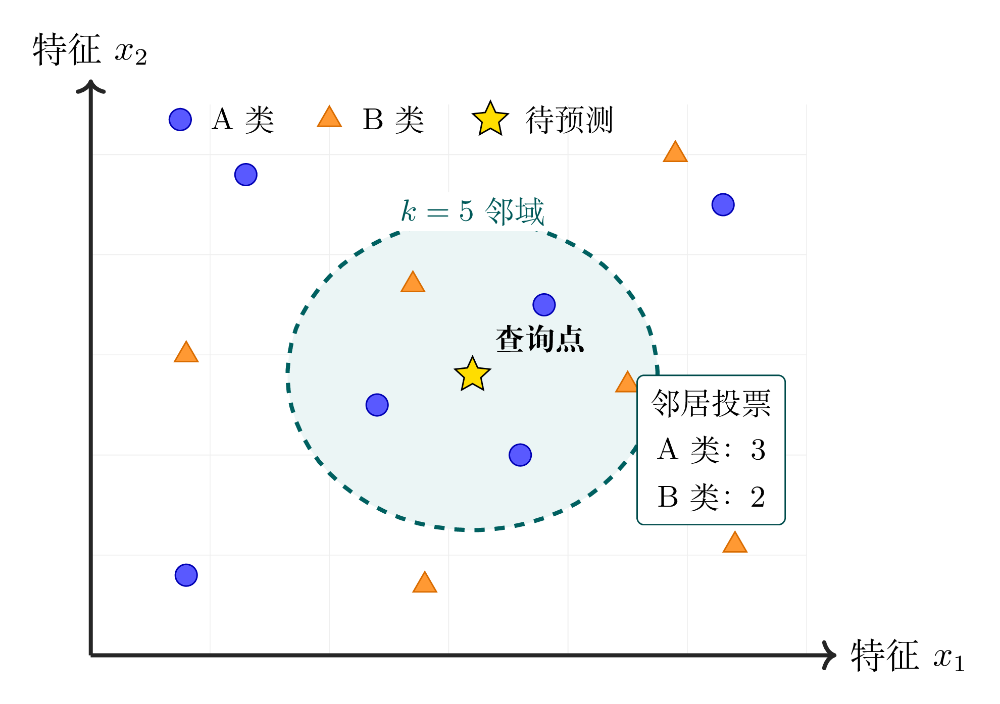
图 17.7 KNN分类示意图。虚线圆仅用于表示包含第5 个最近邻的最小邻域；实际算法只需比较距离，不必显式构造圆形边界。
Definition 17.19 . 设\(\mathcal{D}=\{(x_i,y_i)\}_{i=1}^{n}\) 为观测样本集，其中\(x_i\) 为第\(i\) 个样本的特征向量，\(y_i\) 是第\(i\) 个样本的标签或值。给定距离度量\(\rho\) 以及整数\(k\geqslant1\) ，对任意样本\(x\) ，记其\(k\) 个最近邻样本索引集合为：
\[\begin{equation*}
\mathcal{N}_k(x)=\underset{S\subset\{1,\dots,n\},|S|=k}{\arg\min}\sum_{i\in S}\rho(x,x_i)
\end{equation*}\]
则称如下规则为k近邻（k-nearest neighbours, KNN） 模型：
分类情形：
\[\begin{equation*}
\hat y(x)=\underset{c\in\mathcal{Y}}{\arg\max}\sum_{i\in\mathcal{N}_k(x)}\mathbf{1}(y_i=c)
\end{equation*}\]
回归情形：
\[\begin{equation*}
\hat y(x)=\frac{1}{k}\sum_{i\in\mathcal{N}_k(x)}y_i
\end{equation*}\]
若进一步引入权重函数\(w_i(x)\) ，则可得到加权KNN估计：
\[\begin{equation*}
\hat y(x)=\sum_{i\in\mathcal{N}_k(x)}w_i(x)y_i,\qquad\sum_{i\in\mathcal{N}_k(x)}w_i(x)=1
\end{equation*}\]
其中权重通常取为距离的单调递减函数。
KNN属于一种基于实例(instance-based)的非参数学习方法，其核心思想是在局部邻域中进行统计决策。模型本身不存在显式训练阶段，计算复杂度主要集中在查询阶段的最近邻搜索，因此在高维数据中通常结合KD-Tree或Ball-Tree等空间索引结构以降低搜索成本。
核方法
Definition 17.20 . 设\(X\) 是空间，\(k:X\times X\to\mathbb{R}\) 被称为核函数（kernel function） 。
若对任意的\(x_1,x_2\in X\) 有\(k(x_1,x_2)=k(x_2,x_1)\) ，则称\(k\) 是对称核 ；
若对任意的\(x_1, x_2, \dots, x_{n}\in X\) 和任意的\(a_1, a_2, \dots, a_{n}\in\mathbb{R}\) 有：
\[\begin{equation*}
\sum_{i=1}^{n}\sum_{j=1}^{n}a_ia_jk(x_i,x_j)\geqslant0
\end{equation*}\]
则称\(k\) 为半正定核 。
Definition 17.21 . 设\(X\) 是空间，\(k:X\times X\to\mathbb{R}\) 。对任意的\(x_1, x_2, \dots, x_{n}\in X\) ，称\(K=\Big(k(x_i,x_j)\Big)\in M_{n\times n}(\mathbb{R})\) 为\(n\) 维核矩阵 或Gram矩阵 。
Definition 17.22 . 设\(X\) 是空间，\(k:X\times X\to\mathbb{R}\) ，\(Y\) 是Hilbert空间。若存在\(\varphi:X\to Y\) 使得对任意的\(x_1,x_2\in X\) 有：
\[\begin{equation*}
k(x_1,x_2)=\Big(\varphi(x_1),\varphi(x_2)\Big)
\end{equation*}\]
则称\(\varphi\) 是\(k\) 关于\(Y\) 的一个特征映射 。
Theorem 17.1 . 设\(X\) 是空间，\(k:X\times X\to\mathbb{R}\) ，\(Y\) 是Hilbert空间。若\(k\) 存在关于\(Y\) 的特征映射，则\(k\) 是半正定核。
证明 . \(x_1, x_2, \dots, x_{n}\in X\) 和任意的\(a_1, a_2, \dots, a_{n}\in\mathbb{R}\) 有：
\[\begin{align*}
\sum_{i=1}^{n}\sum_{j=1}^{n}a_ia_jk(x_i,x_j)&=\sum_{i=1}^{n}\sum_{j=1}^{n}a_ia_j\Big(\varphi(x_i),\varphi(x_j)\Big)=\left(\sum_{i=1}^{n}a_i\varphi(x_i),\sum_{i=1}^{n}a_j\varphi(x_i)\right) \\
&=\left\|\sum_{i=1}^{n}a_i\varphi(x_i)\right\|^2\geqslant0
\end{align*}\]
◻
Definition 17.23 . 若Hilbert空间\(Y\) 是定义在\(X\) 上的实值函数空间，则称\(Y\) 为\(X\) 上的Hilbert函数空间 。
Theorem 17.2 . 若\(Y\) 是\(X\) 上的RKHS，则对于任意的\(x\in X\) ，存在唯一的\(k_x\in Y\) 使得对于任意的\(f\in Y\) 有\(f(x)=(f,k_x)\) 。
证明 . \(Y\) 是\(X\) 上的RKHS，所以对于任意的\(x\in X\) ，泛函：
\[\begin{equation*}
L_x:Y\to\mathbb{R},\quad\forall\;f\in Y,\;L_x(f)=f(x)
\end{equation*}\]
都是有界线性泛函。由定理 3.26(1) 可知\(L_x\) 是连续泛函，根据定理 3.34 可知存在唯一的\(k_x\in Y\) 使得对任意的\(f\in Y\) 有\(L_x(f)=f(x)=(f,k_x)\) 。 ◻
Definition 17.25 . 设\(Y\) 是\(X\) 上的RKHS，\(x\in X\) 。称满足对于任意的\(f\in Y\) 有\(f(x)=(f,k_x)\) 的\(k_x\in Y\) 为\(x\) 关于\(Y\) 的再生核（reproducing kernel） 。
note 17.14 . 再生核族\(\{k_x:x\in X\}\) 可导出核函数\(k(x_1,x_2)=k_{x_1}(x_2)\) 。
Property 17.5.1 . 设\(Y\) 是\(X\) 上的RKHS，\(k\) 是\(Y\) 上的再生核族\(\{k_x:x\in X\}\) 导出的核函数，则：
对任意的\(x_1,x_2\in X\) 有\(k(x_1,x_2)=(k_{x_1},k_{x_2})\) ；
\(k\) 是对称核；
\(k\) 是半正定核；
证明 . \(x_1,x_2\in X\) ，由定理 17.2 可知\(k_{x_1},k_{x_2}\in Y\) ，所以\(k_{x_1}(x_2)=k(x_1,x_2)=(k_{x_1},k_{x_2})\) 。
(2)在(1)中其实有\(k_{x_1}(x_2)=k(x_1,x_2)=(k_{x_1},k_{x_2})=(k_{x_2},k_{x_1})=k_{x_2}(x_1)=k(x_2,x_1)\) 。
(3)由定理 17.1 立即可得。 ◻
Theorem 17.3 . （Aronszajn Theorem）
设\(X\) 是空间，\(k:X\times X\to\mathbb{R}\) 。\(k\) 是半正定核当且仅当存在\(X\) 上的再生核Hilbert空间\(Y\) ，对任意的\(x\in X\) ，\(k(x,\cdot)\) 是\(x\) 关于\(Y\) 的再生核。
Theorem 17.4 . （Representor Theorem）
设\(X\) 是空间，\(k:X\times X\to\mathbb{R}\) 是半正定核，由定理 17.3 ，记\(Y\) 是由\(k\) 导出的\(X\) 上的RKHS，\(\{(x_i,y_i)\}_{i=1}^{n}\) 为训练样本。对于优化问题：
\[\begin{equation*}
\min_{f\in Y}\Omega[f(x_1),f(x_2),\dots,f(x_n)]+\lambda||f||^2,\quad\lambda>0
\end{equation*}\]
其任一最优解\(f^*\) 都可以表示为：
\[\begin{equation*}
f(x)=\sum_{i=1}^{n}a_ik(x,x_i)
\end{equation*}\]
其中\(a_i\in\mathbb{R}\) 。
证明 . 性质 1.1.5(1) ，取\(Y\) 的子空间：
\[\begin{equation*}
Y_n=\operatorname{span}\{k_{x_1},k_{x_2},\dots,k_{x_n}\}
\end{equation*}\]
由性质 1.1.5(2) 、性质 3.4.4(2) 和性质 3.2.5(1) 可知\(Y_n\) 是闭的。根据定理 3.28 可知对任意的\(f\in Y\) ，存在下述唯一的分解：
\[\begin{equation*}
f=f_1+f_2,\quad f_1\in Y_n,\;f_2\in Y_n^{\perp}
\end{equation*}\]
由性质 3.4.6(1) 可知\(||f||^2=||f_1||^2+||f_2||^2\) 。因为\(f_2\in Y_n^{\perp}\) ，所以对任意的\(i=1,2,\dots,n\) 有\(f_2\perp k_{x_i}\) ，于是：
\[\begin{equation*}
(f_2,k_{x_i})=f_2(x_i)=0
\end{equation*}\]
所以\(f(x_i)=f_1(x_i)\) ，优化问题可被改写为：
\[\begin{equation*}
\min_{f\in Y}\Omega[f_1(x_1),f_1(x_2),\dots,f_1(x_n)]+\lambda[||f_1||^2+||f_2||^2],\quad\lambda>0
\end{equation*}\]
若\(f^*\) 是最优解，则\(f^*\) 必然在\(Y_n\) 中，否则\(f^*\) 在\(Y_n\) 上的正交投影对应的目标函数值一定比\(f^*\) 对应的目标函数值小。 ◻
神经网络
Definition 17.26 . 若映射\(f_\theta:\mathbb{R}^m\rightarrow\mathbb{R}^n\) 可以表示为若干仿射映射与逐元素非线性映射的复合：
\[\begin{equation*}
f_\theta(x)=\phi^{(L)}\!\circ \phi^{(L-1)} \circ \cdots \circ \phi^{(1)}(x)
\end{equation*}\]
其中第\(l\) 层映射\(\phi^{(l)}:\mathbb{R}^{n_{l-1}}\to\mathbb{R}^{n_l}\) 定义为:
\[\begin{equation*}
\phi^{(l)}(z)=\sigma^{(l)}\!\left(W^{(l)}z+b^{(l)}\right),\quad l=1,2,\dots,L
\end{equation*}\]
这里：
\(W^{(l)}\in\mathbb{R}^{n_l\times n_{l-1}}\) 为第 \(l\) 层的权重矩阵，
\(b^{(l)}\in\mathbb{R}^{n_l}\) 为偏置向量，
\(\sigma^{(l)}\) 为逐元素作用的非线性函数，
\(\theta=\{W^{(l)},b^{(l)}\}_{l=1}^L\) 为网络的全部可学习参数；
则称\(f_\theta\) 为神经网络（neural network, NN） ，非线性映射\(\sigma^{(l)}\) 被称之为激活函数（activation function） 。当\(L>2\) 时，位于输入层与输出层之间的各层称为隐藏层（hidden layer） 。
note 17.15 . 引入激活函数的原因有两点：
如果网络中所有层都是线性函数，则整个网络表示的是线性模型，增加深度不会提升表达能力（无论增加多少层，总能以一个线性映射来等价表示，即多层神经网络等价于一层）。
引入非线性函数可以使得模型有能力拟合非线性函数，
下面给出一些常见的激活函数。
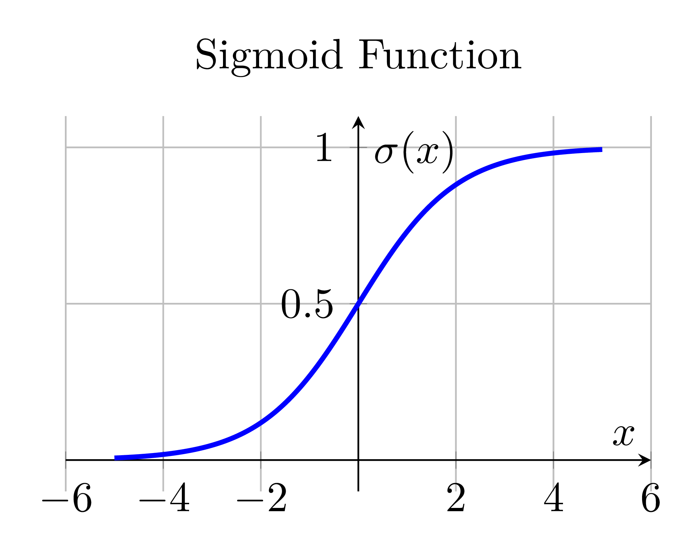
图 17.8 Sigmoid 激活函数\(\sigma(x)=\dfrac{1}{1+e^{-x}}\)
note 17.16 . Sigmoid函数可以将神经网络最终输出的实数值转换到区间\((0,1)\) 内，因此可以将\(\sigma(x)\) 解释为样本属于正类的预测概率，而\(1-\sigma(x)\) 则表示样本属于负类的预测概率，从而可用于二分类任务。
Definition 17.28 . 称函数：
\[\begin{equation*}
\tanh(x)=\frac{e^x - e^{-x}}{e^x + e^{-x}}
\end{equation*}\]
为双曲正切函数（tanh function） 。
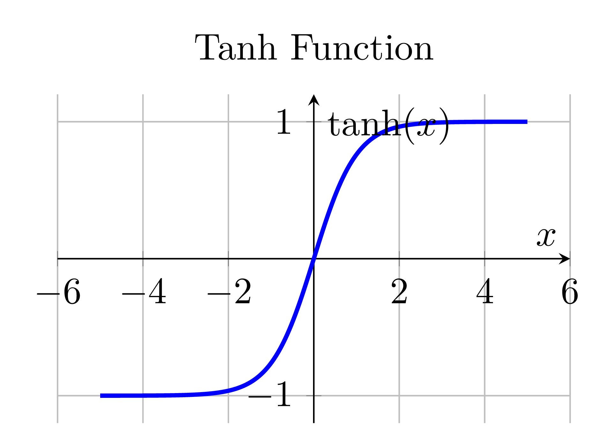
图 17.9 Tanh 激活函数 tanh (x )
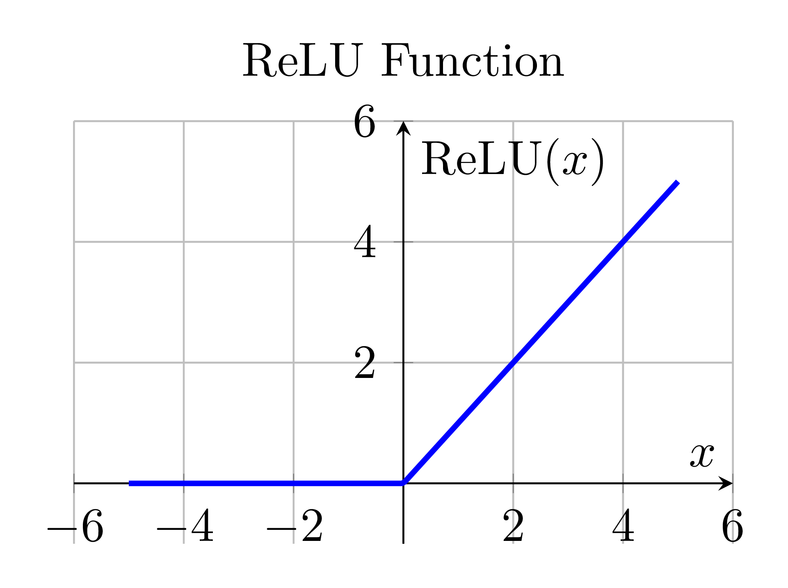
图 17.10 ReLU 激活函数 σ (x ) = max (0, x )
Definition 17.30 . 称函数：
\[\begin{equation*}
\sigma(x)=
\begin{cases}
x,& x>0 \\
\alpha x, & x\leqslant 0
\end{cases}
\quad (\alpha>0 \text{为较小常数})
\end{equation*}\]
为泄漏整流线性单元（leaky ReLU） 。
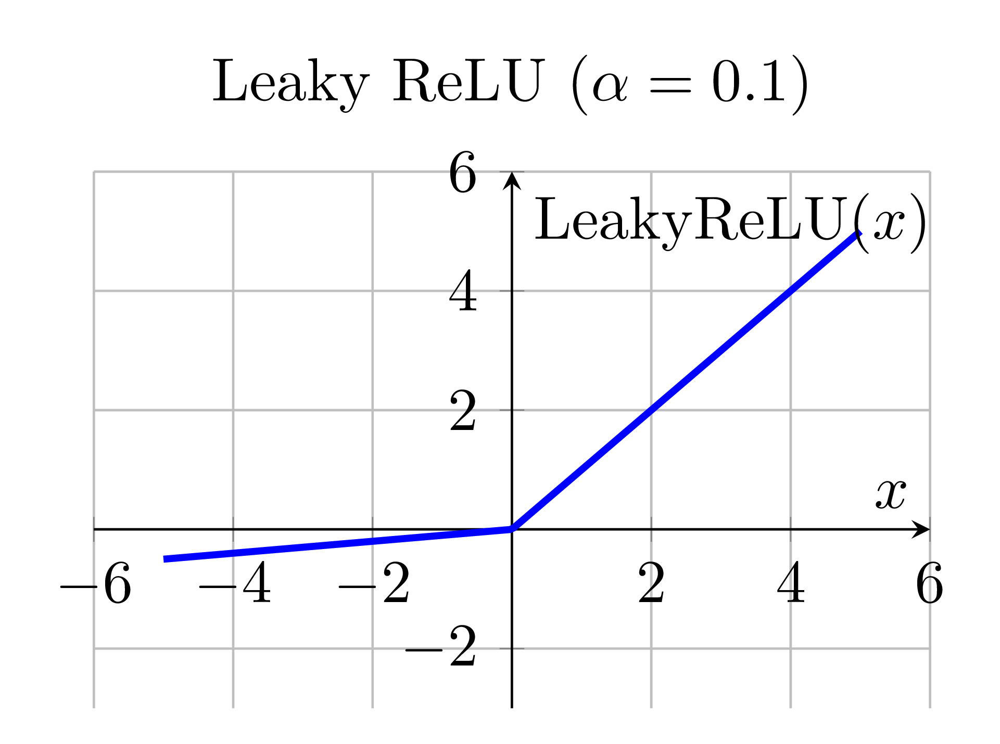
图 17.11 Leaky ReLU 激活函数（α = 0.1
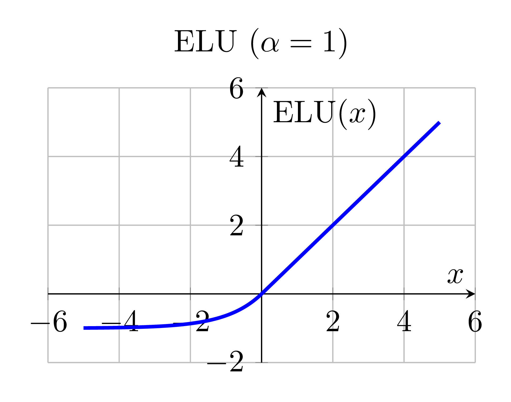
图 17.12 ELU 激活函数（α = 1
Definition 17.32 . 设输入向量\(z=(x_1, x_2, \dots, x_{n})^\top\) ，称映射：
\[\begin{equation*}
\sigma(x)_i=\frac{e^{x_i}}{\sum\limits_{j=1}^ne^{x_j}}, \quad i=1,\dots,n
\end{equation*}\]
为softmax函数（softmax function） 。
note 17.17 . Softmax函数可以将神经网络最终输出的实数向量转换为概率向量\(\sigma(x)\) ，其中每个分量均非负且满足：
\[\begin{equation*}
\sum_{i=1}^n\sigma(x)_i=1
\end{equation*}\]
因此，\(\sigma(x)_i\) 可以解释为样本属于第\(i\) 个类别的预测概率，从而可用于多分类任务。
模型学习
神经网络通常以经验风险\(\hat{R}(\theta)\) 为训练目标，并利用Method 8.1 反复更新参数。
批与轮
Definition 17.33 . 设训练集为\(\mathcal{D}=\{(x_i,y_i)\}_{i=1}^n\) 。在一次参数更新中用于计算梯度的样本集合\(\mathcal{B}\subseteq\mathcal{D}\) 称为一个批（batch） ，其样本数量\(|\mathcal{B}|\) 称为批大小（batch size） 。
Definition 17.34 . 将训练集排列并依次划分为不交的样本集：
\[\begin{equation*}
\mathcal{D}=\mathcal{B}_{e1}\cup\mathcal{B}_{e2}\cup\cdots\cup\mathcal{B}_{eM},\quad M=\left\lceil\frac{n}{B}\right\rceil
\end{equation*}\]
其中\(|\mathcal{B}_{er}|=B,\;i=1,2,\dots,M-1\) 。依次使用这些批完成参数更新，使每个训练样本恰好被使用一次的过程称为一个轮（epoch） ，下标\(e\) 表示轮数。
因此，批大小\(B\) 决定一次迭代使用多少样本，而轮数决定训练集被完整使用多少次。
批量梯度下降
若每次参数更新都使用整个训练集去计算梯度，这种方法称为批量梯度下降 。在这种方法中，整个训练集\(\mathcal{D}\) 本身构成一个批，因而批大小为\(B=n\) ，每一轮只进行一次参数更新。
批量梯度下降在给定参数处使用经验风险的准确梯度，目标函数的变化通常较为平稳。其缺点是必须完成全部\(n\) 个样本的梯度计算后才能更新一次参数；当\(n\) 很大时，单次更新的代价较高。由于更新方向中没有随机扰动，在非凸目标函数的平坦区域或鞍点附近也可能前进缓慢。
随机梯度下降
设第\(e\) 轮开始时将训练样本随机排列为：
\[\begin{equation*}
\pi_e(1),\pi_e(2),\dots,\pi_e(n)
\end{equation*}\]
其中\(\pi_e\) 是\(\{1,2,\dots,n\}\) 的一个随机排列。随后依次使用单个样本的梯度更新参数。这种方法称为随机梯度下降 。此时每个批只包含一个样本，即\(B=1\) ，所以每一轮产生\(n\) 次参数更新。
随机梯度下降不必等待全部样本的梯度计算完成便可以更新参数，并且梯度中由抽样带来的随机扰动可能帮助迭代点离开部分平坦区域。其缺点是单个样本对总体梯度的代表性较弱，梯度方差较大，目标函数值和参数序列容易发生明显波动。
小批量梯度下降
批量梯度下降的梯度准确但更新次数较少，随机梯度下降能够频繁更新参数、帮助脱离平坦区域但梯度方差较大。介于二者之间，可以在每次迭代中使用包含多个样本、但又不等于整个训练集的批\(\mathcal{B}_{er}\) 。使用这一种梯度估计更新参数的方法称为小批量梯度下降。此时\(1<B<n\) ，每一轮产生\(M=\lceil n/B\rceil\) 次参数更新。
批大小能够直接控制梯度估计的随机性。批过小时参数波动较大，批过大时则逐渐失去频繁更新和随机扰动的作用。
梯度消失与梯度爆炸
神经网络参数的梯度需要根据链式法则由输出层向输入层逐层传递。由于这一过程包含许多导数的连续相乘，当其中大多数因子的绝对值小于\(1\) 时，连乘结果会随着网络深度迅速缩小；当其中许多因子的绝对值大于\(1\) 时，连乘结果则可能迅速增大。前一种现象称为梯度消失（vanishing gradient） ，后一种现象称为梯度爆炸（exploding gradient） 。
发生梯度消失时，靠近输入端的网络层得到的梯度接近\(0\) ，相应参数在每次迭代中几乎不发生变化。于是这些层的学习速度远慢于靠近输出端的网络层，严重时即使继续增加训练轮数也难以得到有效更新。随着网络深度增加，更多网络层可能处于这种近似停止学习的状态，使增加深度无法带来预期的表达能力。
发生梯度爆炸时，部分参数的梯度范数会变得很大，使一次迭代产生过大的参数变化。此时经验风险可能在迭代过程中剧烈波动，参数序列可能偏离原有的下降区域，严重时甚至无法收敛。
因此，梯度消失主要表现为参数更新过慢，而梯度爆炸主要表现为参数更新幅度失去控制。
预防梯度消失或梯度爆炸，首先应当选择导数不易接近\(0\) 且不会过大的激活函数。Sigmoid函数和双曲正切函数在当\(|x|\) 较大时导数都接近\(0\) ，因此在深层网络的隐藏层中反复使用这类激活函数会增大梯度消失的可能性。对于梯度爆炸，还可以在参数更新前限制梯度的整体大小。
Definition 17.35 . 将关于全部参数的梯度依次排列为向量\(g\) 。给定阈值\(c>0\) ，定义按整体范数进行的梯度裁剪（gradient clipping） 为：
\[\begin{equation*}
\operatorname{clip}_c(g)=
\begin{cases}
g,&||g||\leqslant c \\
\dfrac{c}{||g||}g,&||g||>c
\end{cases}
\end{equation*}\]
经过裁剪后总有\(||\operatorname{clip}_c(g)||\leqslant c\) ，并且当\(\|g\|>c\) 时只缩小梯度长度而不改变其方向。梯度裁剪为每次迭代中的参数变化提供了上界，可以防止个别过大的梯度直接造成参数更新失控。
序列网络
在许多预测问题中，一个样本所包含的信息并非集中在单个观测中，而是沿着某种顺序逐步展开。模型依次接收\(x_1,x_2,\dots,x_T\) ，并在处理当前观测\(x_t\) 时结合此前已经获得的信息，从而不断更新对整个样本的理解。例如，文本的含义随着词语依次出现而逐渐形成，语音信号需要结合前后时刻的变化加以识别，患者的健康状态也常常需要根据一系列按时间记录的检查结果进行判断。因此，这类预测问题的输入不应被视为彼此独立的一组向量，而应被视为一个具有内部顺序的整体。
Definition 17.36 . 设\(T\in\mathbb{N}^+\) 。称有序向量组：
\[\begin{equation*}
x_{1:T}=(x_1,x_2,\dots,x_T),\quad x_t\in\mathbb{R}^m,\quad t=1,2,\dots,T
\end{equation*}\]
为长度为\(T\) 的序列（sequence） ，其中\(t\) 为时间步（time step） 索引，\(x_t\) 表示第\(t\) 个时间步的观测向量。
本节考虑序列到单值输出的任务，即将整个输入序列\(x_{1:T}\) 映射为单个输出\(y\) ，其中\(y\) 可以是离散的类别标签，也可以是连续的数值。
为了在预测中体现输入序列的先后顺序，一种自然的建模方式是按照\(x_1,x_2,\dots,x_T\) 的顺序依次处理各个观测。在处理序列的过程中，模型维护一个随时间步不断更新的内部状态：每读入一个新的观测，便结合当前观测与此前形成的状态更新这一内部状态，从而使历史信息能够沿序列逐步传递。
Definition 17.37 . 设映射\(f_\theta:\mathbb{R}^m\times\mathbb{R}^d\to\mathbb{R}^d\) ，给定初始状态\(h_0\in\mathbb{R}^d\) 。对于输入序列\(x_1,x_2,\dots,x_T\) ，递推定义：
\[\begin{equation*}
h_t=f_\theta(x_t,h_{t-1}),\quad t=1,2,\dots,T
\end{equation*}\]
称\(h_t\) 为模型在第\(t\) 个时间步的隐藏状态（hidden state） 。
隐藏状态\(h_t\) 可以看作模型在处理完\(x_1,x_2,\dots,x_t\) 后形成的内部表示。它并不是对全部历史输入的逐项存储，而是通过递推映射\(f_\theta\) 对历史信息进行压缩和整合，从中保留对当前任务有用的信息。因此，在处理完整个输入序列后，可以将最终隐藏状态\(h_T\) 视为模型对整个序列所提取的信息表示，并在此基础上进行预测。例如将\(h_T\) 输入到一个一般的神经网络\(g\) 中去得到\(\hat{y}=g(h_T)\) 。
初始状态\(h_0\) 通常取为\(\mathbf{0}\) ，也可以作为模型参数进行学习。由于在所有时间步中使用的是同一个映射\(f_\theta\) ，模型的参数数量不会随序列长度\(T\) 增加，并且同一模型可以递推处理不同长度的输入序列。
note 17.18 . 在这一统一表示下，序列网络的核心在于如何构造状态更新映射\(f_\theta\) 。不同的序列网络本质上对应于\(f_\theta\) 的不同参数化方式。
循环神经网络
Definition 17.38 . 设输入维数为\(m\) ，隐藏状态维数为\(d\) ，给定：
\[\begin{equation*}
W_x\in\mathbb{R}^{d\times m},\quad W_h\in\mathbb{R}^{d\times d},\quad b\in\mathbb{R}^d
\end{equation*}\]
则第\(t\) 个时间步的隐藏状态定义为：
\[\begin{equation*}
h_t=\phi(W_xx_t+W_hh_{t-1}+b),\quad t=1,2,\dots,T
\end{equation*}\]
其中\(\phi\) 为逐元素作用的激活函数，初始状态\(h_0\) 为给定向量。由上式定义的序列映射称为循环神经网络（recurrent neural network, RNN） 。
在这一状态更新式中，\(W_xx_t\) 提取当前输入的信息，\(W_hh_{t-1}\) 将上一时间步形成的历史状态传递到当前时间步。
为了逐层提取序列特征，可以将多个RNN沿网络深度方向堆叠。第\(l\) 层第\(t\) 个时间步的输入为第\(l-1\) 层第\(t\) 个时间步计算出的隐藏状态。
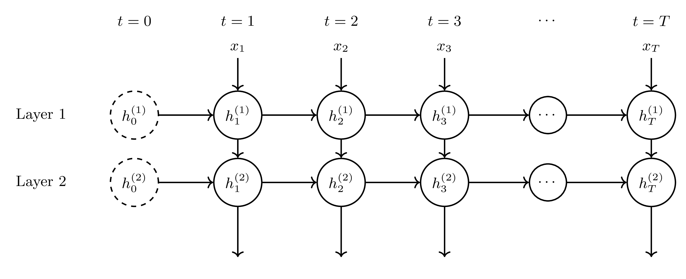
图 17.13 多层循环神经网络结构示意图
Algorithm 17.6 Forward Propagation of a Multi-layer RNN
Input: Input sequence \(\{x_t^{(1)}\}_{t=1}^T\) , parameters \(\{W_h^{(l)}, W_x^{(l)}, b^{(l)}\}_{l=1}^{L}\) , activation functions \(\phi(\cdot)\)
Output: Hidden states \(\{h_t^{(L)}\}_{t=1}^{T}\)
Initialize hidden states \(h_0^{(l)} = \mathbf{0}\) for all \(l = 1,\dots,L\)
for \(t = 1\) to \(T\) do （Iterate over time steps）
for \(l= 1\) to \(L\) do （Iterate over layers）
\(x_t^{(l)} \gets h_t^{(l-1)}\) （Output of previous layer as current input）
\(h_t^{(l)}\gets\phi\left(W_h^{(l)}h_{t-1}^{(l)}+W_x^{(l)}x_t^{(l)}+b^{(l)}\right)\)
对于序列到单个输出的任务，需要进一步将隐藏状态序列\(\{h_t^{(L)}\}_{t=1}^{T}\) 汇总为一个固定维数的序列表示。常见的做法是取最终隐藏状态，或者对所有隐藏状态求均值，即：
\[\begin{equation*}
z=h_T^{(L)}\quad\text{或}\quad z=\frac{1}{T}\sum_{t=1}^Th_t^{(L)}
\end{equation*}\]
得到序列表示\(z\) 后，可将其输入一个一般的神经网络\(g\) 从而得到输出值。
note 17.19 . RNN在每个时间步都用当前输入和上一隐藏状态共同生成新的隐藏状态，但没有单独的机制判断哪些历史信息应当保留、哪些信息应当遗忘。随着时间步不断推进，较早的信息可能在反复更新中逐渐被后来的输入覆盖，导致模型难以区分当前状态中的短期信息和需要长期保留的信息。
RNN的另一个重要问题出现在长序列训练过程中。梯度沿时间方向反向传播时，需要连续经过许多次状态更新；链式法则中的导数连乘可能使早期时间步的梯度迅速缩小，形成梯度消失，也可能使梯度迅速增大，形成梯度爆炸。
长短期记忆网络
长短期记忆网络（long short-term memory, LSTM） 是为了解决普通RNN在长序列训练中出现的梯度消失与梯度爆炸问题而提出的结构，它在隐藏状态\(h_t\) 之外引入细胞状态（cell state） \(\;c_t\in\mathbb{R}^d\) 。隐藏状态主要用于产生当前输出并传递给下一时间步，细胞状态则为历史信息提供一条单独的传递路径。模型利用若干取值位于\((0,1)\) 的向量控制信息在各个分量上的保留、写入和输出，这些向量统称为门（gate） 。
将上一时间步的隐藏状态与当前输入拼接为：
\[\begin{equation*}
q_t=[h_{t-1};x_t]\in\mathbb{R}^{d+m}
\end{equation*}\]
其中分号表示按分量纵向拼接。给定权重矩阵：
\[\begin{equation*}
W_f,W_i,W_c,W_o\in\mathbb{R}^{d\times(d+m)}
\end{equation*}\]
和偏置\(b_f,b_i,b_c,b_o\in\mathbb{R}^d\) ，LSTM按照下列顺序更新状态。递推开始前还需给定初始隐藏状态\(h_0\) 和初始细胞状态\(c_0\) 。
首先计算遗忘门 ：
\[\begin{equation*}
f_t=\sigma(W_fq_t+b_f)
\end{equation*}\]
Sigmoid函数逐分量将结果映射到\((0,1)\) 。\(f_t\) 的某一分量越接近\(1\) ，相应的旧细胞状态越多地被保留；越接近\(0\) ，相应信息越多地被遗忘。
随后计算输入门 和候选细胞状态 ：
\[\begin{align*}
i_t&=\sigma(W_iq_t+b_i),\\
\widetilde{c}_t&=\tanh(W_cq_t+b_c)
\end{align*}\]
输入门\(i_t\) 决定候选信息中有多少可以写入细胞状态，候选状态\(\widetilde{c}_t\) 则给出根据当前输入和上一隐藏状态形成的新信息。由遗忘门和输入门共同更新细胞状态：
\[\begin{equation*}
c_t=f_t\odot c_{t-1}+i_t\odot\widetilde{c}_t
\end{equation*}\]
其中\(\odot\) 表示Hadamard乘积。第一项表示从旧细胞状态中保留的信息，第二项表示写入的新信息。
最后计算输出门 与隐藏状态：
\[\begin{align*}
o_t&=\sigma(W_oq_t+b_o),\\
h_t&=o_t\odot\tanh(c_t)
\end{align*}\]
输出门\(o_t\) 决定细胞状态的哪些分量可以形成当前隐藏状态。预测结果仍然由\(h_t\) 经过任务所需的输出映射得到。
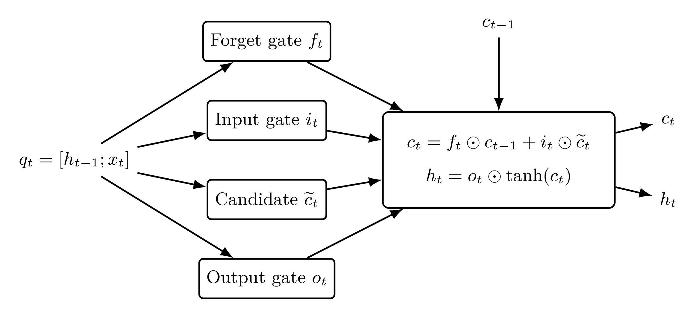
图 17.14 单个时间步的LSTM状态更新
构造多层LSTM时，第\(l\) 层在时间\(t\) 产生的\(h_t^{(l)}\) 作为第\(l+1\) 层在同一时间步的输入，而每一层分别维护自己的隐藏状态和细胞状态。
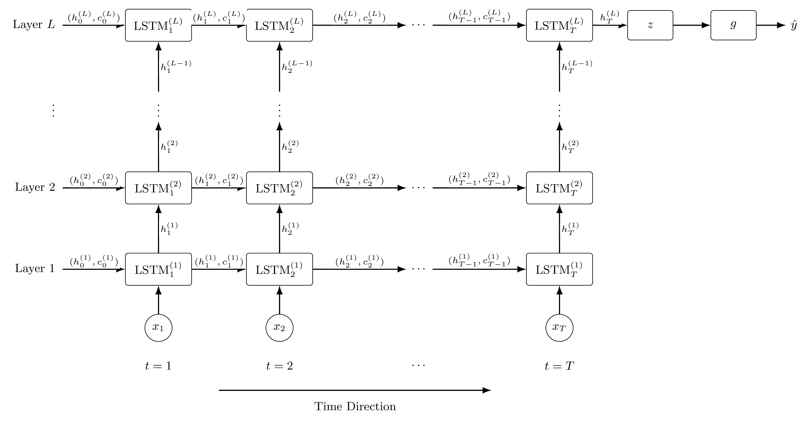
图 17.15 多层LSTM在时间维度上的展开结构
Algorithm 17.7 Forward Propagation of a Multi-layer LSTM
Input: Input sequence \(\{x_t^{(1)}\}_{t=1}^T\) , parameters \(\{W_f^{(l)},W_i^{(l)},W_c^{(l)},W_o^{(l)},b_f^{(l)},b_i^{(l)},b_c^{(l)},b_o^{(l)}\}_{l=1}^{L}\)
Output: Hidden states \(\{h_t^{(l)}\}_{l=1}^{L}\) and cell states \(\{c_t^{(l)}\}_{l=1}^{L}\)
Initialize \(h_0^{(l)}=\mathbf{0},\; c_0^{(l)}=\mathbf{0}\) for all \(l=1,\dots,L\)
for \(t=1\) to \(T\) do （Iterate over time steps）
for \(l=1\) to \(L\) do （Iterate over layers）
\(x_t^{(l)} \gets h_t^{(l-1)}\) （Input from the previous layer）
Forget gate: controls how much of \(c_{t-1}^{(l)}\) is retained
\[\begin{equation*}
f_t^{(l)} \gets \sigma\!\left(W_f^{(l)}[h_{t-1}^{(l)},x_t^{(l)}]+b_f^{(l)}\right)
\end{equation*}\]
Input gate: controls how much new information is written
\[\begin{equation*}
i_t^{(l)} \gets \sigma\!\left(W_i^{(l)}[h_{t-1}^{(l)},x_t^{(l)}]+b_i^{(l)}\right)
\end{equation*}\]
Candidate cell state: new content to be added
\[\begin{equation*}
\tilde c_t^{(l)} \gets \tanh\!\left(W_c^{(l)}[h_{t-1}^{(l)},x_t^{(l)}]+b_c^{(l)}\right)
\end{equation*}\]
Cell state update: forget old + write new
\[\begin{equation*}
c_t^{(l)} \gets f_t^{(l)}\odot c_{t-1}^{(l)} + i_t^{(l)}\odot \tilde c_t^{(l)}
\end{equation*}\]
Output gate: controls exposure of cell state
\[\begin{equation*}
o_t^{(l)} \gets \sigma\!\left(W_o^{(l)}[h_{t-1}^{(l)},x_t^{(l)}]+b_o^{(l)}\right)
\end{equation*}\]
Hidden state: gated and activated cell state
\[\begin{equation*}
h_t^{(l)} \gets o_t^{(l)}\odot \tanh(c_t^{(l)})
\end{equation*}\]
对于序列到单个输出的任务，LSTM同样可以将最后一层的隐藏状态序列\(\{h_t^{(L)}\}_{t=1}^{T}\) 汇总为固定维数的序列表示，例如：
\[\begin{equation*}
z=h_T^{(L)}\quad\text{或}\quad z=\frac{1}{T}\sum_{t=1}^Th_t^{(L)}
\end{equation*}\]
随后将\(z\) 输入一个一般的神经网络\(g\) ，得到最终输出值。
门控循环单元
门控循环单元（gated recurrent unit, GRU） 的设计目标是对LSTM的门控记忆机制进行简化。它将细胞状态与隐藏状态合并为单一的隐藏状态，并只保留重置门和更新门，从而减少需要维护的状态和门控变量，在保留门控信息传递能力的同时降低模型结构的复杂程度。
将上一隐藏状态与当前输入拼接为：
\[\begin{equation*}
q_t=[h_{t-1};x_t]\in\mathbb{R}^{d+m}
\end{equation*}\]
给定权重矩阵\(W_r,W_z\in\mathbb{R}^{d\times(d+m)}\) 和偏置\(b_r,b_z\in\mathbb{R}^d\) ，分别定义重置门 和更新门 ：
\[\begin{align*}
r_t&=\sigma(W_rq_t+b_r),\\
z_t&=\sigma(W_zq_t+b_z)
\end{align*}\]
两个门的每个分量都位于\((0,1)\) 。重置门用于控制旧隐藏状态在形成候选状态时所占的比例，更新门则用于控制最终状态中旧信息和候选信息的组合比例。
将重置门作用在上一隐藏状态上，再与当前输入拼接，得到候选隐藏状态：
\[\begin{equation*}
\widetilde{h}_t=\tanh\left(W_h[r_t\odot h_{t-1};x_t]+b_h\right)
\end{equation*}\]
其中\(W_h\in\mathbb{R}^{d\times(d+m)}\) ，\(b_h\in\mathbb{R}^d\) 。当\(r_t\) 的某一分量接近\(0\) 时，上一隐藏状态的相应信息在形成候选状态时受到抑制；当其接近\(1\) 时，相应历史信息被较完整地用于计算候选状态。
最终隐藏状态由旧隐藏状态和候选隐藏状态逐分量组合：
\[\begin{equation*}
h_t=z_t\odot h_{t-1}+(1-z_t)\odot\widetilde{h}_t
\end{equation*}\]
在这一约定下，\(z_t\) 越接近\(1\) ，旧隐藏状态保留得越多；\(z_t\) 越接近\(0\) ，当前状态越多地采用候选隐藏状态。由于这一更新包含旧状态与候选状态的加法组合，模型可以在不同时间步上选择保持已有信息或者写入新信息。
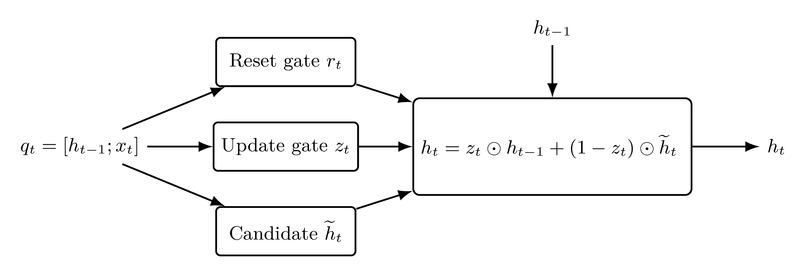
图 17.16 单个时间步的GRU状态更新
构造多层GRU时，第\(l\) 层在时间\(t\) 产生的\(h_t^{(l)}\) 作为第\(l+1\) 层同一时间步的输入，每一层分别维护自己的隐藏状态。
Algorithm 17.8 Forward Propagation of a Multi-layer GRU
Input: Input sequence \(\{x_t^{(1)}\}_{t=1}^T\) , parameters \(\{W_z^{(l)},W_r^{(l)},W_h^{(l)},b_z^{(l)},b_r^{(l)},b_h^{(l)}\}_{l=1}^{L}\)
Output: Hidden states \(\{h_t^{(l)}\}_{l=1}^{L}\)
Initialize \(h_0^{(l)}=\mathbf{0}\) for all \(l=1,\dots,L\)
for \(t=1\) to \(T\) do （Iterate over time steps）
for \(l=1\) to \(L\) do （Iterate over layers）
\(x_t^{(l)} \gets h_t^{(l-1)}\) （Input from the previous layer）
Update gate: controls how much of the past state is retained
\[\begin{equation*}
z_t^{(l)} \gets \sigma\!\left(W_z^{(l)}[h_{t-1}^{(l)},x_t^{(l)}]+b_z^{(l)}\right)
\end{equation*}\]
Reset gate: controls how much past information is ignored
\[\begin{equation*}
r_t^{(l)} \gets \sigma\!\left(W_r^{(l)}[h_{t-1}^{(l)},x_t^{(l)}]+b_r^{(l)}\right)
\end{equation*}\]
Candidate hidden state: new content to be written
\[\begin{equation*}
\tilde h_t^{(l)} \gets \tanh\!\left(W_h^{(l)}[r_t^{(l)}\odot h_{t-1}^{(l)},x_t^{(l)}]+b_h^{(l)}\right)
\end{equation*}\]
Hidden state update: interpolate between old and new
\[\begin{equation*}
h_t^{(l)} \gets (1-z_t^{(l)})\odot h_{t-1}^{(l)} + z_t^{(l)}\odot \tilde h_t^{(l)}
\end{equation*}\]
GRU得到最终输出值的方法与RNN和LSTM一样。
图像网络
先说明计算机如何表示图像，再讨论如何利用图像自身的结构设计网络。
具体地，一幅图像可以看作规则空间网格上的数值函数。将连续的平面区域离散化为由\(H\times W\) 个小方格组成的网格，每一个小方格称为一个像素（pixel） ，有序对\((H,W)\) 称为图像的空间分辨率（spatial resolution） 。像素的空间位置通常用整数坐标\((p,q)\) 表示，其中\(p=1,2,\dots,H,\;q=1,2,\dots,W\) 。因此，一幅分辨率为\(H\times W\) 的图像可以看作在离散网格\(\{1,2,\dots,H\}\times\{1,2,\dots,W\}\) 上定义的数值函数。
对于灰度图像而言，每个像素仅对应一个实数，用来描述该位置的亮度。灰度强度刻画了该像素有多亮或有多暗，通常取值在某个区间内，例如：
\[\begin{equation*}
I_{p,q}\in[0,255]\quad\text{或}\quad I_{p,q}\in[0,1]
\end{equation*}\]
其中数值越大表示亮度越高，数值越小表示亮度越低。这样，一幅灰度图像可以用一个矩阵\(I\in M_{H\times W}(\mathbb{R})\) 来表示。
对于彩色图像，每个像素不仅具有亮度信息，还包含颜色信息。计算机中最常用的颜色表示方式是RGB模型，即用红色、绿色与蓝色三种基色的强度线性组合来表示任意颜色。对应地，每一个像素不再是一个标量，而是一个三维向量，这三个分量分别称为三个通道（channel） ，表示该像素在R、G、B三种基色（即红绿蓝）上的强度大小。
设图像的空间分辨率为\(H\times W\) ，则一幅RGB彩色图像可以表示为一个三维张量：
\[\begin{equation*}
I=(I_{p,q,c})\in\mathbb{R}^{H\times W\times3}
\end{equation*}\]
其中\((p,q)\) 表示像素的空间位置，\(c\in\{1,2,3\}\) 分别对应红、绿、蓝三个颜色通道，\(I_{p,q,c}\) 表示位于位置\((p,q)\) 的像素在第\(c\) 个通道上的强度，即该颜色分量的亮度大小。
从矩阵的角度看，一幅彩色图像等价于三张大小为\(H\times W\) 的灰度图像在通道维度上的叠加：
\[\begin{equation*}
I=\big(I^{(R)},I^{(G)},I^{(B)}\big)
\end{equation*}\]
其中：
\[\begin{equation*}
I^{(R)},I^{(G)},I^{(B)}\in\mathbb{R}^{H\times W}
\end{equation*}\]
分别表示红色通道、绿色通道与蓝色通道对应的灰度矩阵。
换言之，像素坐标刻画空间位置 ，通道数值刻画颜色分量的强度 。对于图像而言，空间位置不是可以任意交换的标签：交换两个像素的位置通常会改变图像的含义。正因为如此，图像模型需要同时尊重局部邻域关系和空间排列关系。
卷积
Definition 17.39 . 设输入图像为\(X\in M_{H\times W}(\mathbb{R})\) 。在图像的每一个空间位置\((i,j)\) ，取其邻域窗口：
\[\begin{equation*}
\{(i+u-1,j+v-1):u=1,2,\dots,h,\; v=1,2,\dots,w\}
\end{equation*}\]
并对该邻域内的像素值施加一组固定权重\(K=(K_{uv})\in M_{h\times w}(\mathbb{R})\) ，定义局部加权求和：
\[\begin{equation*}
s_{ij}=\sum_{u=1}^h\sum_{v=1}^wK_{uv}X(i+u-1;j+v-1)
\end{equation*}\]
由此在整个空间网格上得到的二维数组\(S=(s_{ij})\) 称为由该局部加权算子产生的特征图（feature map） 。对于包含多个颜色通道的输入，每个通道都有一组对应的权重。
note 17.20 . 卷积是针对空间网格设计的局部算子。它包含以下几方面的建模假设。
局部连接： 输出位置\((i,j)\) 只使用输入位置\((i,j)\) 附近的窗口，而不直接连接整幅图像。这个假设利用了图像的局部相关性：相邻像素往往共同构成边缘、纹理等局部结构。
权值共享： 同一个卷积核\(K\) 被用于所有空间位置，因此模型学习的是某种局部模式，而不是某个固定位置上的特定像素组合。这样既显著减少了参数数量，也使同一种模式出现在不同位置时能够被同一组参数检测出来。
平移等变性： 在忽略边界处理的影响时，如果输入图像中的局部模式发生平移，由该卷积核产生的特征图也会相应平移，而不会因为模式改变了绝对位置就完全失效。
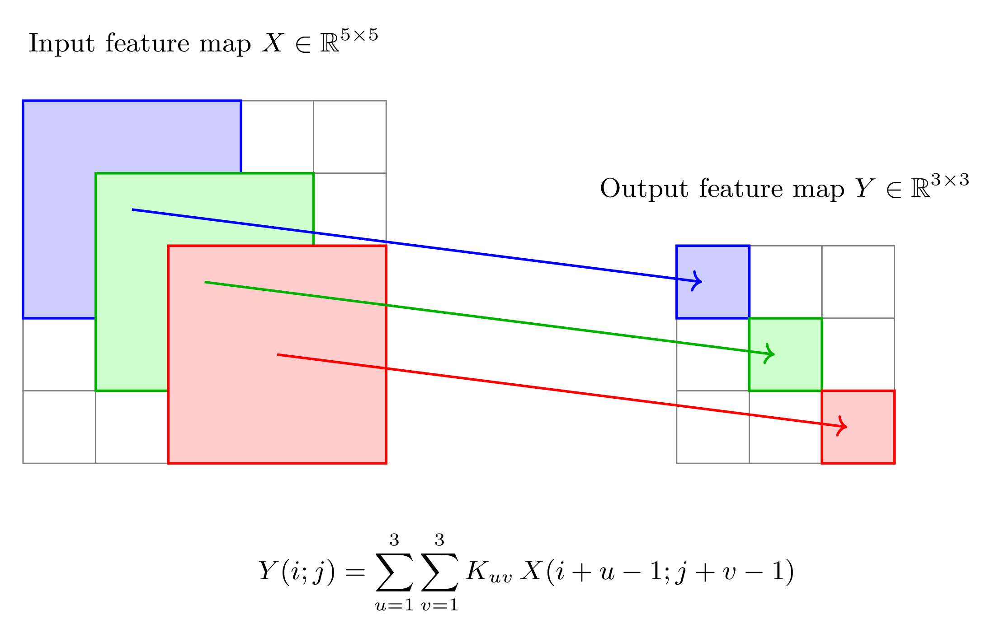
图 17.17 二维离散卷积的滑动窗口与输出位置对应关系示意图
池化
Definition 17.41 . 设输入特征图为\(X\in M_{H\times W}(\mathbb{R})\) 。给定窗口尺寸\((h,w)\) 以及步幅\((s_h, s_w)\) 。在输出特征图位置\((i,j)\) 处，取\(X\) 中的元素集合：
\[\begin{equation*}
W_{ij}=\bigl\{\,(\,(i-1)s_h+u,\;(j-1)s_w+v\,):u=1,2,\dots,h,\;v=1,2,\dots,w\,\bigr\}
\end{equation*}\]
并在该集合内对像素值施加一个映射\(P:\mathbb{R}^{h\times w}\to\mathbb{R}\) ，称\(P\) 为池化算子（pooling operator） ，该操作称为池化（pooling） 。
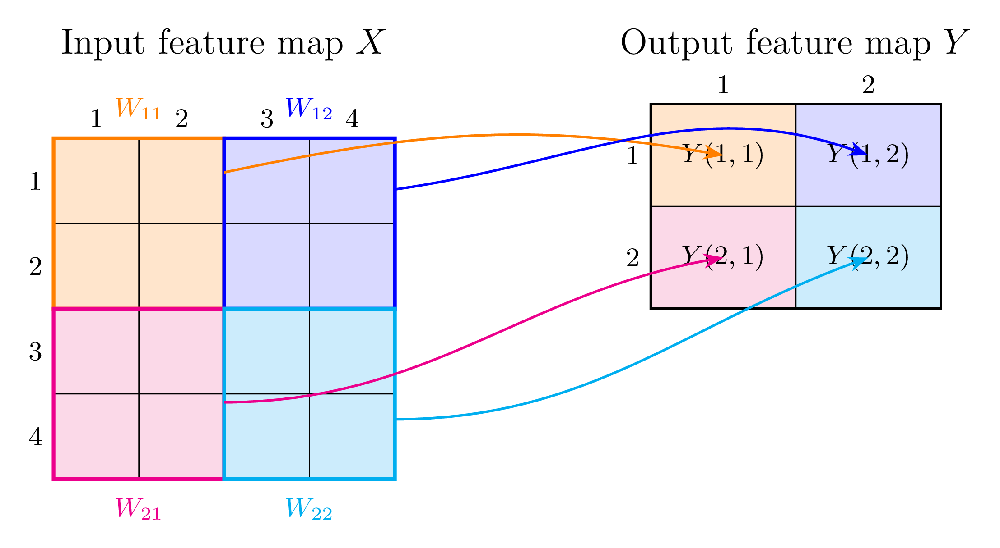
图 17.18 窗口尺寸为(2, 2) 、步幅为(2, 2) 的池化计算示意图
note 17.21 . 卷积得到的特征图在相邻空间位置上通常具有较强的冗余性，因此没有必要在网络的所有层中始终保留同样精细的空间分辨率。为了降低后续计算量，可以对特征图进行降采样。
但是，若直接从相邻位置中间隔取值，得到的结果会较强地依赖于具体的采样位置：输入发生很小的平移，就可能使被保留的响应发生明显变化。因此，可以对一个局部邻域内的响应进行聚合，再用聚合结果代表这一邻域。池化正是基于这一思想：它在舍弃部分空间分辨率进行空间降采样的同时，使表示对局部范围内的位置变化不那么敏感。
常见池化函数有：
最大池化 ：在窗口内取最大值。
平均池化 ：在窗口内取均值。
填充
在上述卷积与池化定义中，邻域窗口\(W_{ij}\) 在靠近边界时可能超出输入特征图\(X\) 的定义域。为使边界位置仍能使用同样的局部算子，通常在输入特征图四周引入填充（padding） ，即补充一圈预先规定的数值，得到扩展特征图\(\tilde{X}\) ，然后对\(\tilde{X}\) 进行卷积或池化操作。
note 17.22 . 卷积中的padding除了规定边界之外的取值方式外，还可以控制卷积后特征图的空间尺寸。若卷积核大小为\(h\times w\) ，步长为\(1\) ，并分别在上下和左右各补充\(p_h\) 行与\(p_w\) 列，则卷积后的空间尺寸为：
\[\begin{equation*}
(H+2p_h-h+1)\times(W+2p_w-w+1)
\end{equation*}\]
因此，不使用padding时，卷积会使特征图的空间尺寸逐渐缩小；而当\(h,w\) 均为奇数并取：
\[\begin{equation*}
p_h=\frac{h-1}{2},\quad p_w=\frac{w-1}{2}
\end{equation*}\]
时，可以使卷积前后的空间尺寸保持为\(H\times W\) 。这种处理使边界附近的像素也能够参与与内部位置相同形式的局部卷积，同时避免特征图在连续卷积过程中因边界舍弃而过快缩小。
卷积神经网络
卷积神经网络（convolutional neural network, CNN） 由特征提取阶段和预测阶段组成。特征提取阶段由若干卷积、激活和降采样操作交替堆叠而成，最前面的卷积层在小邻域内寻找边缘、方向和简单纹理等低级模式；后续卷积层再把相邻位置的低级模式组合成角点、局部形状等更复杂的结构；随着层数增加，单个位置能够利用的输入区域逐步扩大，最终形成对物体部件乃至整体形状的表示。池化进一步降低特征图的空间分辨率，使模型对小范围的位置变化更稳定。非线性激活函数使这些局部组合不再只是线性叠加，从而能够表达更复杂的判别关系。预测阶段将高层特征进行整合，并根据任务输出类别概率或其他预测量。
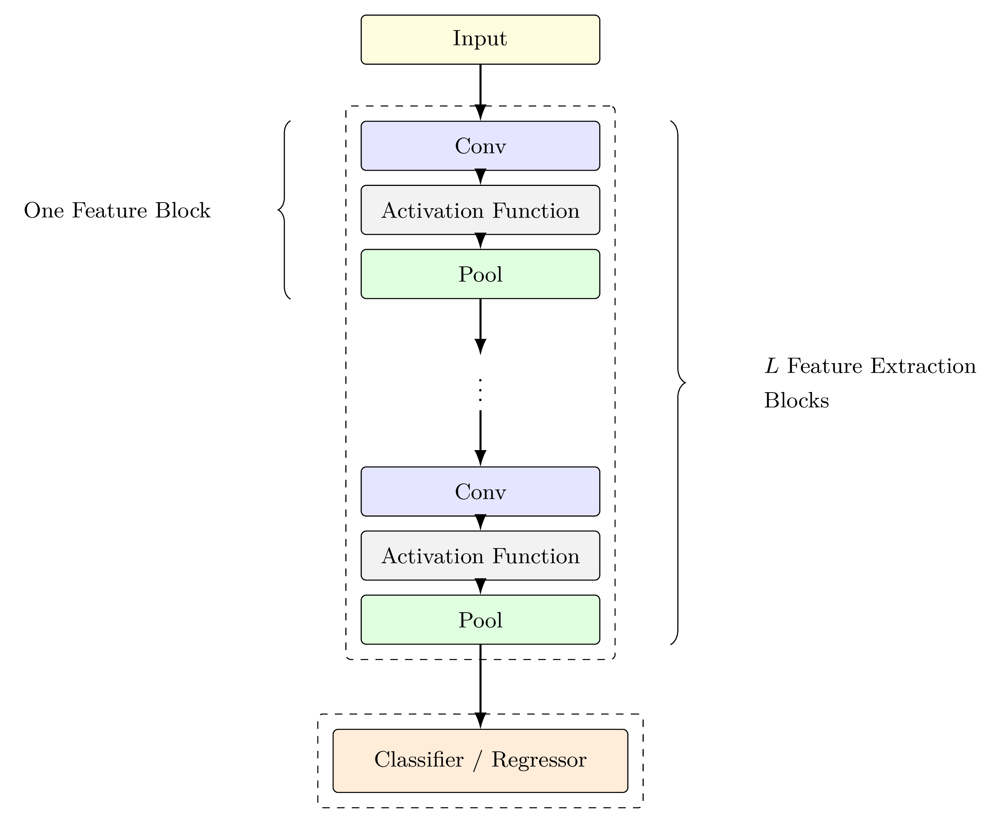
图 17.19 卷积神经网络结构示意图
note 17.23 . CNN是将图像的空间性质写入模型结构的神经网络。它适用于像素排列在规则网格上、邻近位置通常相关、同一种局部模式可能出现在不同位置的数据，例如自然图像和部分医学影像。对于行列只表示变量编号的矩阵，或者局部邻域没有稳定含义的表格数据，卷积所加入的空间假设未必成立，直接使用CNN反而可能限制模型的表达能力。
实验 01
分类树 Python · Jupyter
分类树
本实验使用 scikit-learn
的乳腺癌二分类数据考察决策树的复杂度控制。实验依次完成：
将恶性样本定义为正类，并划分训练集与独立测试集；
拟合不限制复杂度的分类树，观察训练集与测试集表现的差距；
利用训练集上的五折分层交叉验证选择 max_depth 与
min_samples_leaf；
在测试集上报告 Accuracy、Precision、Recall、F1 与
AUROC，并查看混淆矩阵和特征重要性。
import matplotlib.pyplot as pltfrom figure_settings import configure_matplotlibimport numpy as npimport pandas as pdfrom sklearn.datasets import load_breast_cancerfrom sklearn.metrics import (from sklearn.model_selection import (from sklearn.tree import DecisionTreeClassifier"seaborn-v0_8-white" )= 42 = {"unrestricted" : "#E45756" , "tuned" : "#4C78A8" }
1. 预处理
原始数据将良性记为 1 、恶性记为 0 。为使疾病筛查中的 Recall
具有直接含义，这里重新编码为恶性 = 1 、良性 = 0 。先按类别比例划出 20% 的独立测试集，其余 80% 作为训练集。
= load_breast_cancer()= pd.DataFrame(cancer.data, columns= cancer.feature_names)= pd.Series((cancer.target == 0 ).astype(int ), name= "malignant" )= train_test_split(= 0.20 ,= y,= RANDOM_STATE,= pd.Series("total samples" : len (X),"features" : X.shape[1 ],"train samples" : len (X_dev),"test samples" : len (X_test),"malignant rate" : y.mean(),= "value" ,= pd.DataFrame("train" : y_dev.value_counts().sort_index(),"test" : y_test.value_counts().sort_index(),= {0 : "benign (0)" , 1 : "malignant (1)" })round (3 ))
value
total samples
569.000
features
30.000
train samples
455.000
test samples
114.000
malignant rate
0.373
train
test
malignant
benign (0)
285
72
malignant (1)
170
42
2. 不限制树生长
令
max_depth=None、min_samples_leaf=1，使树一直生长到叶节点纯净或无法继续分裂，查看模型的拟合情况。
def classification_metrics(model, features, labels):= model.predict(features)= model.predict_proba(features)[:, 1 ]return {"Accuracy" : accuracy_score(labels, prediction),"Precision" : precision_score(labels, prediction),"Recall" : recall_score(labels, prediction),"F1" : f1_score(labels, prediction),"AUROC" : roc_auc_score(labels, probability),= DecisionTreeClassifier(random_state= RANDOM_STATE).fit(X_dev, y_dev)= pd.DataFrame("train" : classification_metrics(unrestricted, X_dev, y_dev),"test" : classification_metrics(unrestricted, X_test, y_test),= pd.Series("depth" : unrestricted.get_depth(),"leaves" : unrestricted.get_n_leaves(),= "unrestricted tree" ,round (3 ))
unrestricted tree
depth
8
leaves
24
Accuracy
Precision
Recall
F1
AUROC
train
1.00
1.000
1.000
1.000
1.000
test
0.93
0.905
0.905
0.905
0.925
3. 观察树深的影响
固定 min_samples_leaf=1，令 max_depth 从
1 增加到 12 。每个候选深度都在训练集上进行相同的五折分层交叉验证。训练
AUROC 与交叉验证 AUROC
的分离可以显示模型复杂度增加后方差逐渐增大的过程。
= StratifiedKFold(= 5 , shuffle= True , random_state= RANDOM_STATE= []for depth in range (1 , 13 ):= cross_validate(= depth, random_state= RANDOM_STATE),= "roc_auc" ,= classification_cv,= True ,= 1 ,"max_depth" : depth,"training AUROC" : scores["train_score" ].mean(),"validation AUROC" : scores["test_score" ].mean(),"validation standard deviation" : scores["test_score" ].std(),= pd.DataFrame(depth_rows).set_index("max_depth" )= plt.subplots(figsize= (8.6 , 5.2 ), constrained_layout= True )"training AUROC" ], marker= "o" , label= "training AUROC" )"validation AUROC" ], marker= "o" , label= "cross-validation AUROC" )"validation AUROC" ] - depth_results["validation standard deviation" ],"validation AUROC" ] + depth_results["validation standard deviation" ],= 0.16 ,set (= "Tree depth and classification performance" ,= "Maximum depth" ,= "AUROC" ,= list (depth_results.index),
4. 调参
联合搜索上述两个参数的最优值，并以平均交叉验证 AUROC
最大作为选择准则，若平均交叉验证 AUROC 相同，则取复杂度最低的模型。
= [1 , 2 , 3 , 4 , 5 , 6 , 8 , None ]= [1 , 2 , 5 , 10 , 20 ]= GridSearchCV(= RANDOM_STATE),= {"max_depth" : depth_values,"min_samples_leaf" : leaf_values,= "roc_auc" ,= classification_cv,= True ,= 1 ,= pd.DataFrame(classification_grid.cv_results_)"depth label" ] = classification_cv_results["param_max_depth" ].map (lambda value: "None" if value is None else str (int (value))= classification_cv_results.pivot(= "param_min_samples_leaf" ,= "depth label" ,= "mean_test_score" ,= leaf_values, columns= [str (value) for value in depth_values[:- 1 ]] + ["None" ])= ("depth label" , "param_min_samples_leaf" , "mean_train_score" , "mean_test_score" , "std_test_score" ]"mean_test_score" , ascending= False )8 )= {"depth label" : "max_depth" ,"param_min_samples_leaf" : "min_samples_leaf" ,"mean_train_score" : "training AUROC" ,"mean_test_score" : "validation AUROC" ,"std_test_score" : "validation standard deviation" ,round (3 ))print (f"Selected parameters: { classification_grid. best_params_} " )print (f"Mean cross-validation AUROC: { classification_grid. best_score_:.3f} " )= plt.subplots(figsize= (9.2 , 5.2 ), constrained_layout= True )= ax.imshow(classification_heatmap.to_numpy(), aspect= "auto" , cmap= "YlGnBu" , vmin= 0.86 , vmax= 1.00 )for row in range (classification_heatmap.shape[0 ]):for column in range (classification_heatmap.shape[1 ]):= classification_heatmap.iloc[row, column]f" { value:.3f} " , ha= "center" , va= "center" , fontsize= 8 )= ("None" if classification_grid.best_params_["max_depth" ] is None else str (classification_grid.best_params_["max_depth" ])= list (classification_heatmap.columns).index(best_depth_label)= list (classification_heatmap.index).index(classification_grid.best_params_["min_samples_leaf" ])= 260 , facecolors= "none" , edgecolors= "#E45756" , linewidths= 2.4 )set (= "Five-fold cross-validation AUROC" ,= "Maximum depth" ,= "Minimum samples per leaf" ,= np.arange(classification_heatmap.shape[1 ]),= classification_heatmap.columns,= np.arange(classification_heatmap.shape[0 ]),= classification_heatmap.index,= ax, label= "Mean validation AUROC" )
max_depth
min_samples_leaf
training AUROC
validation AUROC
validation standard deviation
39
None
20
0.988
0.959
0.021
34
8
20
0.988
0.959
0.021
29
6
20
0.988
0.959
0.021
24
5
20
0.988
0.959
0.021
19
4
20
0.988
0.958
0.022
28
6
10
0.992
0.956
0.021
23
5
10
0.992
0.956
0.021
33
8
10
0.992
0.956
0.021
Selected parameters: {'max_depth': 5, 'min_samples_leaf': 20}
Mean cross-validation AUROC: 0.959
5. 在测试集上比较模型
调参结束后才使用测试集。分类指标采用阈值 0.5 ，AUROC
则直接使用叶节点中的恶性样本比例。混淆矩阵的行表示真实类别，列表示预测类别。
= classification_grid.best_estimator_= {"unrestricted" : unrestricted,"tuned" : tuned_classifier,= []for model_name, model in classification_models.items():for data_name, features, labels in ["train" , X_dev, y_dev),"test" , X_test, y_test),"model" : model_name,"data" : data_name,"depth" : model.get_depth(),"leaves" : model.get_n_leaves(),** classification_metrics(model, features, labels),= pd.DataFrame(comparison_rows).set_index(["model" , "data" ])round (3 ))= plt.subplots(1 , 2 , figsize= (10.5 , 4.3 ), constrained_layout= True )for ax, (model_name, model) in zip (axes, classification_models.items()):= ["Benign" , "Malignant" ],= False ,= "Blues" ,= ax,= plt.subplots(figsize= (7.2 , 5.2 ), constrained_layout= True )for model_name, model in classification_models.items():1 ],= model_name,= {"color" : COLORS[model_name]},= ax,0 , 1 ], [0 , 1 ], linestyle= "--" , color= "#6B7280" , linewidth= 1 )"ROC curves on the independent test set" )
depth
leaves
Accuracy
Precision
Recall
F1
AUROC
model
data
unrestricted
train
8
24
1.000
1.000
1.000
1.000
1.000
test
8
24
0.930
0.905
0.905
0.905
0.925
tuned
train
5
7
0.941
0.899
0.947
0.923
0.988
test
5
7
0.939
0.927
0.905
0.916
0.979
6. 基于不纯度下降的特征重要性
下面给出调参后分类树中得分最高的十个特征。
= (= X.columns, name= "importance" )= False )10 )round (3 ))= plt.subplots(figsize= (8.4 , 5.2 ), constrained_layout= True )= ax, color= "#4C78A8" )set (= "Impurity-based feature importance of the tuned tree" ,= "Normalized importance" ,= "Feature" ,
importance
worst perimeter
0.872
worst concave points
0.111
area error
0.012
worst texture
0.004
worst radius
0.001
mean radius
0.000
concavity error
0.000
worst symmetry
0.000
worst concavity
0.000
worst compactness
0.000
实验 02
回归树 Python · Jupyter
回归树
本实验使用 scikit-learn
自带的糖尿病回归数据完成一次决策树回归分析。实验将样本划分为训练集、验证集与测试集：候选模型只在训练集上拟合，利用验证集选择
max_depth 与
min_samples_leaf，最后仅在测试集上评价选定模型。
import matplotlib.pyplot as pltfrom figure_settings import configure_matplotlibimport numpy as npimport pandas as pdfrom sklearn.datasets import load_diabetesfrom sklearn.metrics import mean_absolute_error, mean_squared_error, r2_scorefrom sklearn.model_selection import train_test_splitfrom sklearn.tree import DecisionTreeRegressor"seaborn-v0_8-whitegrid" )= 42
1. 读取数据并划分样本
数据包含 442 位受试者的 10
个基线特征，连续响应是一年后的疾病进展指标。scikit-learn
已对特征作中心化与尺度处理。首先留出 40%
的样本，再将其等分为验证集与测试集，最终训练集、验证集和测试集分别约占
60% 、20% 和 20% 。
三份数据的职责彼此分离：训练集用于估计每棵候选树，验证集用于选择超参数，测试集在选定模型后才使用。
= load_diabetes(as_frame= True )= diabetes.data= diabetes.target.rename("disease progression" )= train_test_split(= 0.40 ,= RANDOM_STATE,= train_test_split(= 0.50 ,= RANDOM_STATE,= pd.DataFrame("samples" : [len (X_train), len (X_validation), len (X_test)],"proportion" : [len (X_train) / len (X), len (X_validation) / len (X), len (X_test) / len (X)],"purpose" : ["fit candidate trees" , "select hyperparameters" , "final evaluation" ],= ["training" , "validation" , "test" ],= pd.Series("total samples" : len (X),"features" : X.shape[1 ],"minimum response" : y.min (),"maximum response" : y.max (),= "value" ,round ({"proportion" : 3 }))
value
total samples
442.0
features
10.0
minimum response
25.0
maximum response
346.0
samples
proportion
purpose
training
265
0.600
fit candidate trees
validation
88
0.199
select hyperparameters
test
89
0.201
final evaluation
2. 利用验证集调参
考虑 max_depth 与 min_samples_leaf
的不同组合。对于每组参数，重新在训练集上拟合一棵回归树，然后在验证集上计算
MAE、RMSE 与 R 2
max_depth=None
表示不直接限制树深；即使如此，min_samples_leaf
仍可能阻止树继续生长。
def regression_metrics(response, prediction):return {"MAE" : mean_absolute_error(response, prediction),"RMSE" : np.sqrt(mean_squared_error(response, prediction)),"R2" : r2_score(response, prediction),= [1 , 2 , 3 , 4 , 5 , 6 , 8 , None ]= [1 , 2 , 5 , 10 , 20 , 30 ]= {}= []for max_depth in depth_values:for min_samples_leaf in leaf_values:= DecisionTreeRegressor(= max_depth,= min_samples_leaf,= RANDOM_STATE,= model.predict(X_validation)= (max_depth, min_samples_leaf)= model"max_depth" : max_depth,"depth label" : "None" if max_depth is None else str (max_depth),"min_samples_leaf" : min_samples_leaf,"actual depth" : model.get_depth(),"leaves" : model.get_n_leaves(),** regression_metrics(y_validation, validation_prediction),= pd.DataFrame(validation_rows)= validation_results.loc[validation_results["RMSE" ].idxmin()]= best_row["max_depth" ]if pd.isna(best_max_depth):= None else := int (best_max_depth)= int (best_row["min_samples_leaf" ])= candidate_models[(best_max_depth, best_min_samples_leaf)]= ("depth label" , "min_samples_leaf" , "actual depth" , "leaves" , "MAE" , "RMSE" , "R2" ]"RMSE" )10 )= {"depth label" : "max_depth" })round (3 ))print ("Selected parameters: " f"max_depth= { best_max_depth} , min_samples_leaf= { best_min_samples_leaf} " print (f"Validation RMSE: { best_row['RMSE' ]:.3f} " )= validation_results.pivot(= "min_samples_leaf" ,= "depth label" ,= "RMSE" ,= leaf_values,= [str (value) for value in depth_values[:- 1 ]] + ["None" ],= plt.subplots(figsize= (9.2 , 5.2 ), constrained_layout= True )= ax.imshow(validation_heatmap.to_numpy(), aspect= "auto" , cmap= "YlGnBu_r" )for row in range (validation_heatmap.shape[0 ]):for column in range (validation_heatmap.shape[1 ]):= validation_heatmap.iloc[row, column]f" { value:.1f} " , ha= "center" , va= "center" , fontsize= 8 )= "None" if best_max_depth is None else str (best_max_depth)= list (validation_heatmap.columns).index(best_depth_label)= list (validation_heatmap.index).index(best_min_samples_leaf)= 260 ,= "none" ,= "#E45756" ,= 2.4 ,set (= "Validation RMSE for decision-tree hyperparameters" ,= "Maximum depth" ,= "Minimum samples per leaf" ,= np.arange(validation_heatmap.shape[1 ]),= validation_heatmap.columns,= np.arange(validation_heatmap.shape[0 ]),= validation_heatmap.index,= ax, label= "Validation RMSE" )
max_depth
min_samples_leaf
actual depth
leaves
MAE
RMSE
R2
17
3
30
3
6
41.586
53.218
0.509
23
4
30
4
7
41.990
53.934
0.495
41
8
30
4
7
41.990
53.934
0.495
35
6
30
4
7
41.990
53.934
0.495
29
5
30
4
7
41.990
53.934
0.495
47
None
30
4
7
41.990
53.934
0.495
11
2
30
2
4
43.200
54.622
0.482
16
3
20
3
7
43.946
55.738
0.461
15
3
10
3
8
44.012
55.765
0.461
22
4
20
4
9
43.893
56.317
0.450
Selected parameters: max_depth=3, min_samples_leaf=30
Validation RMSE: 53.218
3. 在测试集上评价选定模型
选定参数后，保留此前只用训练集拟合的模型，不再利用验证集或测试集重新训练。现在首次在测试集上计算
MAE、RMSE 与 R 2
= selected_model.predict(X_test)= y_test.to_numpy() - test_prediction= pd.Series("selected max_depth" : best_max_depth,"selected min_samples_leaf" : best_min_samples_leaf,"actual depth" : selected_model.get_depth(),"leaves" : selected_model.get_n_leaves(),** regression_metrics(y_test, test_prediction),= "test result" ,round (3 ))= min (y_test.min (), test_prediction.min ()) - 5 = max (y_test.max (), test_prediction.max ()) + 5 = plt.subplots(1 , 2 , figsize= (11.5 , 4.7 ), constrained_layout= True )0 ].scatter(y_test, test_prediction, s= 30 , alpha= 0.72 , color= "#4C78A8" )0 ].plot(= "--" ,= 1.6 ,= "#111827" ,0 ].set (= "Observed and predicted responses on the test set" ,= "Observed response" ,= "Predicted response" ,= (plot_min, plot_max),= (plot_min, plot_max),1 ].scatter(test_prediction, test_residual, s= 30 , alpha= 0.72 , color= "#F28E2B" )1 ].axhline(0 , linestyle= "--" , linewidth= 1.6 , color= "#111827" )1 ].set (= "Residuals on the test set" ,= "Predicted response" ,= "Observed minus predicted" ,
test result
selected max_depth
3.000
selected min_samples_leaf
30.000
actual depth
3.000
leaves
6.000
MAE
49.292
RMSE
62.859
R2
0.317
观察
验证集选择
max_depth=3、min_samples_leaf=30，对应验证
RMSE 约为 53.218 。选定模型的实际深度为
3 ，共有 6 个叶节点。
该模型在独立测试集上的 MAE 约为 49.292 ，RMSE 约为 62.859 ，R 2 0.317 。测试集没有参与模型训练或参数选择，因此这些数值是本次随机划分下对最终预测表现的独立评价；更换随机划分后，具体数值可能发生变化。
![实验 01「分类树」结果 1（图 1）]()
![实验 01「分类树」结果 1（图 2）]()
![实验 01「分类树」结果 1（图 3）]()
![实验 01「分类树」结果 1（图 4）]()
![实验 01「分类树」结果 1（图 5）]()
![实验 02「回归树」结果 1（图 1）]()
![实验 02「回归树」结果 1（图 2）]()